Fabian Spieker published a Substack post where he presented the hypothesis that many of the COVID deaths in summer 2021 in the United States were caused by "vaccine-medicated enhanced disease", since in the southeastern states which had a massive wave of COVID deaths in the summer of 2021, many people who had previously not been vaccinated were getting their first vaccine dose around the same time. [https://vigilance.pervaers.com/p/us-summer-deaths-of-2021]
Kirsch posted this tweet: [https://twitter.com/stkirsch/status/1750573957856792983]
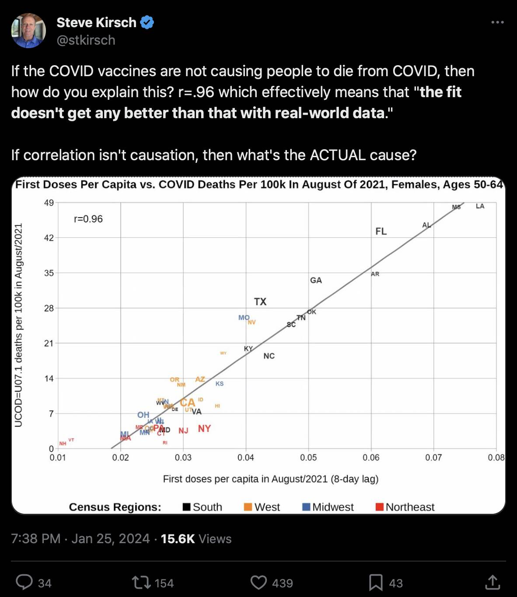
However the states where people were still getting first shots in August 2021 tended to have a low percentage of vaccinated people. I got a correlation of about -0.55 when I included all ages and all sexes and I looked at the percentage of vaccinated people in August 2021 and not the percentage of people who got the first shot in August 2021:
In the southeastern states which had the highest number of COVID deaths per capita in August 2021, there was also a spike in PCR positivity rate which slightly preceded the deaths:
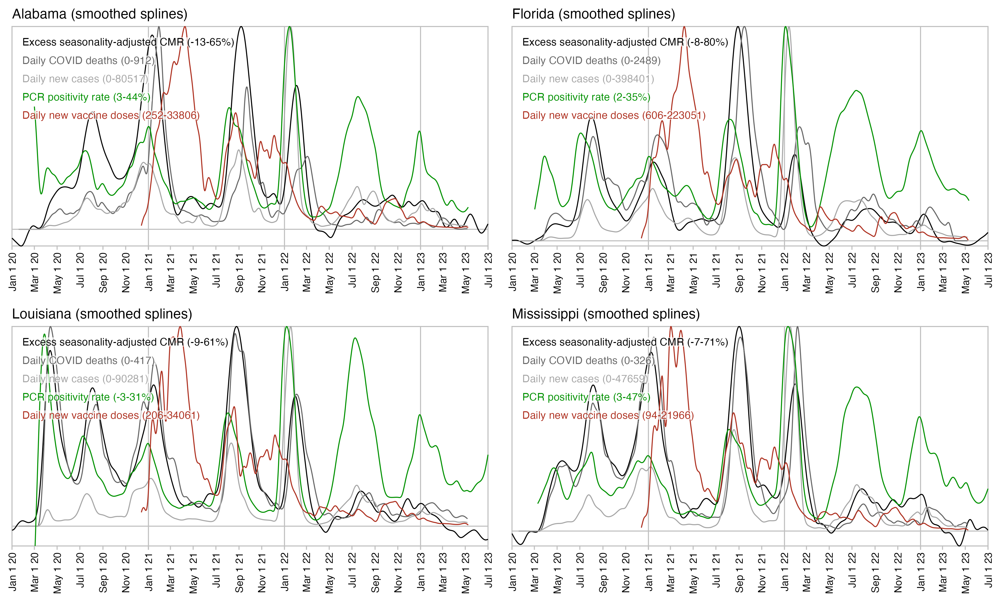
In fact the plot above shows that the spike in PCR positivity was short-lived like the spike in excess deaths, so both PCR positivity and excess deaths had fallen back near zero around November 2021, even though the daily number of new vaccine doses remained elevated until around March 2022. So the excess deaths not only rose in sync with PCR positivity rate but they also fell in sync after the PCR positivity rate fell down. And the same thing happened again during the Omicron wave.
In Florida there is only a small peak in vaccine doses around August 2021 when deaths peaked, and new vaccine doses remained around the same level until the end of 2021. But there was a sharp drop in PCR positivity rate which was followed by a sharp drop in excess mortality:
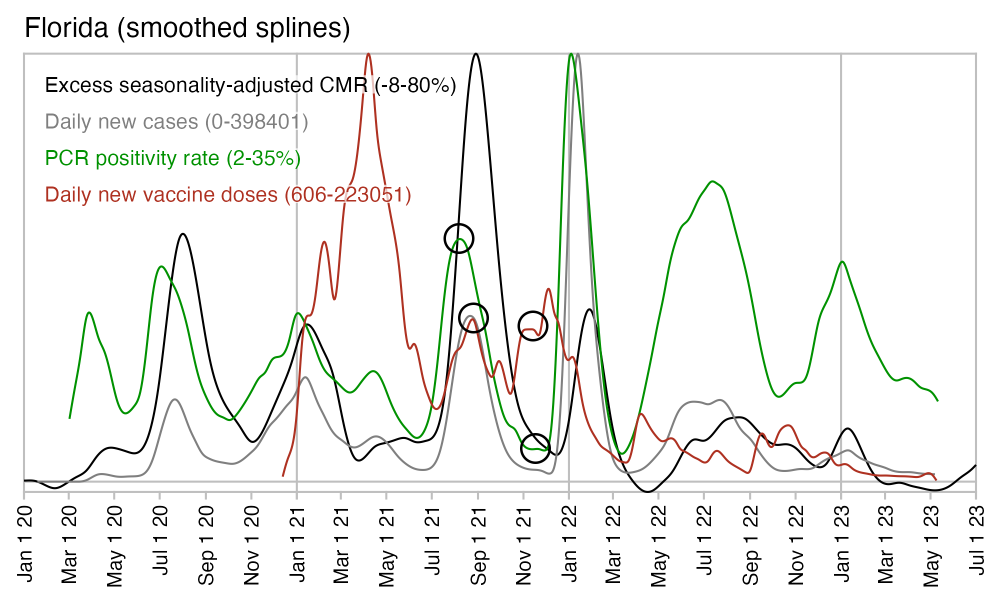
In February 2023 Kirsch published a spreadsheet of data from Medicare, which includes the dates of vaccination and dates of death of about 110,000 vaccinated people who died between December 2020 and January 2023: [https://kirschsubstack.com/i/104943824/the-medicare-data-that-i-received, moar.html#Connecticut_Medicare_data_published_by_Kirsch]
$ curl -Ls sars2.net/f/kirsch_medicare_all_states_subset.csv|head state,date_of_vaccination,date_of_death,age_at_death MI,2020-12-16,2020-12-20,74 WI,2020-12-16,2021-02-16,79 ME,2020-12-16,2021-05-18,77 WI,2020-12-16,2021-10-24,75 MN,2020-12-16,2021-11-24,76 MI,2020-12-16,2021-12-06,77 MI,2020-12-16,2022-01-24,60 IN,2020-12-16,2022-01-28,73 MI,2020-12-16,2022-11-08,71
Compared to the total US population which also includes unvaccinated people, the vaccinated people who are included in the Medicare spreadsheet have reduced mortality during the Omicron wave in January 2022 and the Delta wave in August to September 2021, and in fact the bump in deaths during the Delta wave seems to be almost flat among the vaccinated people:

If you only look at ages 15-44 in Kirsch's Medicare spreadsheet, the sample size is so small that it's diffficult to tell if there's actually an increase in deaths in August 2021 or not:
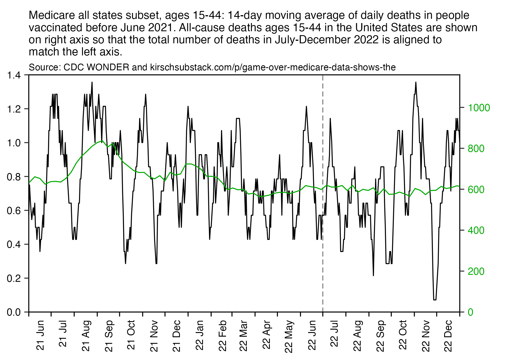
In the Medicare data there's also a reduced number of deaths in the first weeks following a vaccination. For example in people who were vaccinated in August 2021, there's only 9 deaths during the first week from vaccination and 11 deaths the next week, but during later weeks the average number of deaths is about 25:
> med=read.csv("https://sars2.net/f/kirsch_medicare_all_states_subset.csv")
> med[,2]=as.Date(med[,2]);med[,3]=as.Date(med[,3])
> weeks=with(subset(med,grepl("2021-08",date_of_vaccination)),as.numeric(date_of_death-date_of_vaccination)%/%7)
> weeks=table(factor(weeks,min(weeks):max(weeks)))
> weeks
0 1 2 3 4 5 6 7 8 9 10 11 12 13 14 15 16 17 18 19 20 21 22 23 24 25
9 11 31 36 19 26 24 26 29 24 39 23 22 24 27 28 28 35 28 28 39 32 22 18 32 30
26 27 28 29 30 31 32 33 34 35 36 37 38 39 40 41 42 43 44 45 46 47 48 49 50 51
32 27 30 25 23 24 18 24 14 20 21 31 26 28 24 24 21 21 20 17 26 23 23 21 27 17
52 53 54 55 56 57 58 59 60 61 62 63 64 65 66 67 68 69 70 71 72 73 74 75 76
24 15 20 23 18 22 29 12 18 21 20 19 19 21 30 25 25 26 21 27 22 15 15 14 4
> mean(weeks[3:54])
[1] 25.30769
And if you only look at the 5 southeastern states that had the highest number of COVID deaths per capita in August 2021, among people who were vaccinated in July to September 2021, there were only 3 deaths on the first week after vaccination and 5 deaths on the second week, even though the average number of deaths per week was later about 11:
> sub=subset(med,date_of_vaccination>="2021-07-01"&date_of_vaccination<="2021-09-30"&state%in%c("AL","AR","FL","LA","MS"))
> weeks=as.numeric(sub$date_of_death-sub$date_of_vaccination)%/%7
> weeks=table(factor(weeks,min(weeks):max(weeks)))
> weeks
0 1 2 3 4 5 6 7 8 9 10 11 12 13 14 15 16 17 18 19 20 21 22 23 24 25
3 5 12 17 11 8 10 6 9 8 9 9 9 12 15 14 14 13 16 8 13 11 13 18 9 12
26 27 28 29 30 31 32 33 34 35 36 37 38 39 40 41 42 43 44 45 46 47 48 49 50 51
11 14 10 19 12 12 15 8 10 9 12 8 11 7 10 4 13 11 12 8 9 8 12 9 13 11
52 53 54 55 56 57 58 59 60 61 62 63 64 65 66 67 68 69 70 71 72 73 74 75 76 77
7 10 10 8 11 9 12 9 10 9 5 9 8 11 20 9 8 10 9 8 10 5 4 3 3 3
78 79
2 2
> mean(weeks[3:54])
[1] 10.98077
In the Medicare "all states subset" sheet, if you look at the five southeastern states which had the highest number of COVID deaths per capita in August 2021, there's a low number of all-cause deaths in recently vaccinated people in July and August 2021. Among people who were vaccinated in August, there's only 6 deaths in August even though the average date of vaccination was on August 16th so August consists of roughly half a month, and the average number of deaths on subsequent months was about 17.5 which is almost 3 times higher than 6:
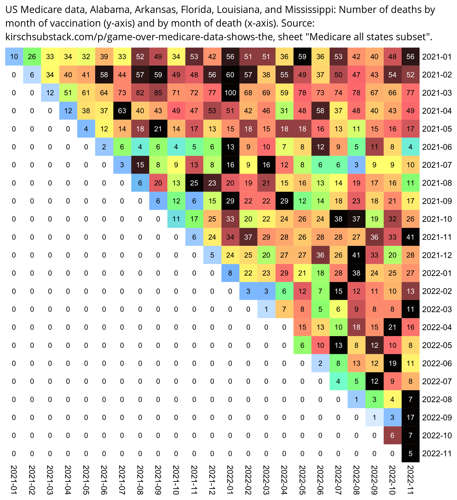
med=read.csv("https://sars2.net/f/kirsch_medicare_all_states_subset.csv")
med[,2]=as.Date(med[,2])
med[,3]=as.Date(med[,3])
med=med[med[,2]>="2021-01-01"&med[,2]<="2022-11-30",]
med=med[med[,3]>="2021-01-01"&med[,3]<="2022-11-30",]
med=med[med[,1]%in%c("AL","AR","FL","LA","MS"),]
m=table(sub("...$","",med$date_of_vaccination),substr(med$date_of_death,1,7))
disp=m
m=m/apply(m,1,max)
pheatmap::pheatmap(m,filename="0.png",display_numbers=disp,
cluster_rows=F,cluster_cols=F,legend=F,border_color=NA,
cellwidth=20,cellheight=20,fontsize=9,fontsize_number=8,na_col="white",
number_color=ifelse(m>.85,"white","black"),
breaks=seq(0,1,,256),
colorRampPalette(colorspace::hex(colorspace::HSV(c(210,210,210,160,110,60,30,0,0,0),c(0,.25,rep(.5,8)),c(rep(1,8),.5,0))))(256))
system("convert 0.png -trim -bordercolor white -gravity northwest -splice x16 -size `identify -format %w 0.png`x -pointsize 45 caption:'US Medicare data, Alabama, Arkansas, Florida, Louisiana, and Mississippi: Number of deaths by month of vaccination (y-axis) and by month of death (x-axis). Source: kirschsubstack.com/p/game-over-medicare-data-shows-the, sheet \"Medicare all states subset\".' +swap -append -trim -border 24 +repage 1.png")
In Guam there was also a spike in COVID deaths and PCR positivity rate in September 2021:
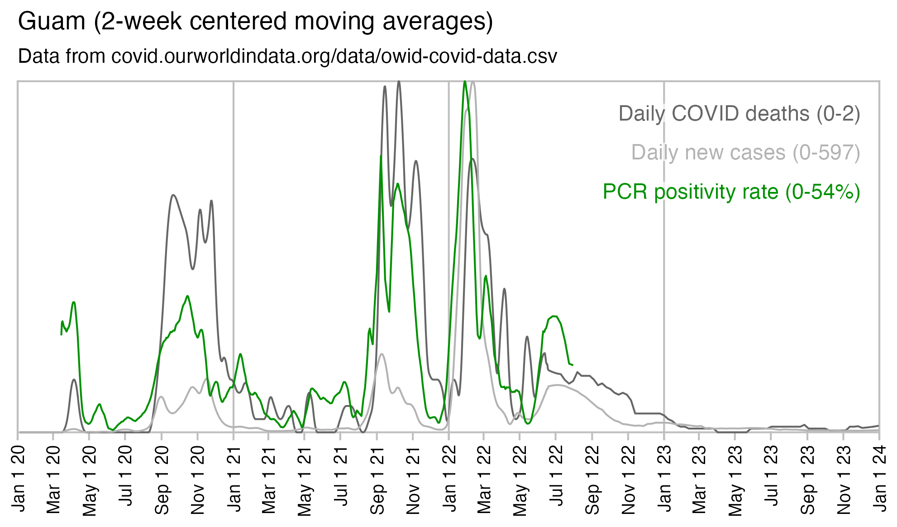
A report about COVID death at Guam said: "Though overall vaccination coverage in Guam is high with 93.5% of the eligible population (age ≥5) vaccinated as of 1/22/2022, among individuals who died of COVID-19 in Guam in 2021 with known vaccination status, over 80% were not fully vaccinated." [https://dphss.guam.gov/wp-content/uploads/2022/02/Guam_covid19_DOA_2021_Report_2_1_2022_FINAL.pdf] According to Table 1 of the report, there were 132 deaths in people with a known vaccination status, but 102 of the people were unvaccinated, which is about 77%:
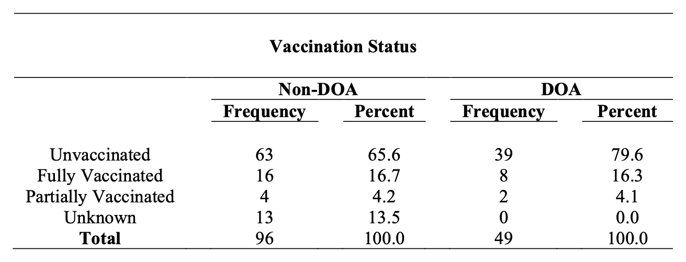
In July to August 2021 there were also news reports that the demand for vaccines had incresed in southeastern states because of the Delta wave. For example an article about Louisiana published in early August 2021 said: [https://www.nytimes.com/2021/08/05/us/louisiana-vaccines-covid-delta.html]
But when Madeline LeBlanc relented and got her first vaccine dose this week, she was motivated by something entirely different: fear.
After seeing news reports about the Delta variant raging across the state, Ms. LeBlanc, 24, had come to see that without a vaccine, she risked not just her own life but those of others around her. "I don't want to be the one inhibiting someone else's health," said Ms. LeBlanc, who lives in Baton Rouge.
Demand for the shots has nearly quadrupled in recent weeks in Louisiana, a promising glimmer that the deadly reality of the virus might be breaking through a logjam of misunderstanding and misinformation.
The new push for vaccinations has been driven by an explosion in coronavirus cases.
When I tried comparing the daily number of COVID deaths in 2021 to daily new vaccine doses given, I got a negative correlation for most states, and the correlation got even lower when I shifted the dates of death 10 days into the past. However when I compared daily COVID deaths to PCR positivity rate instead, I got a positive correlation for all states, and the correlation increased even further when I shifted the dates of death by 10 days:
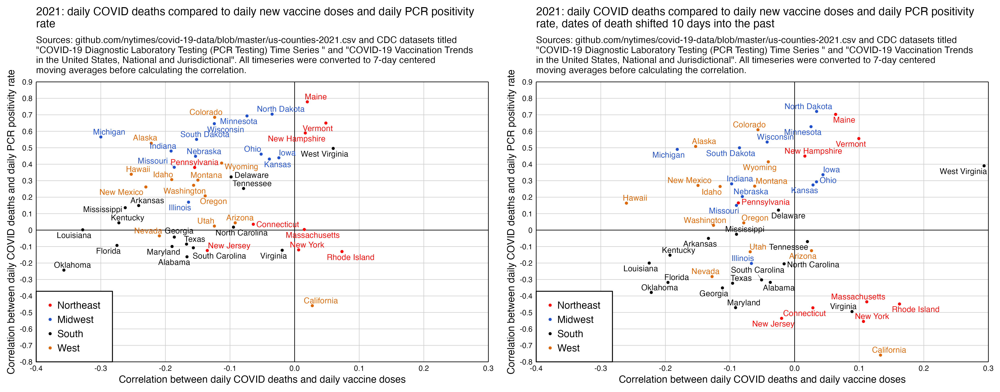
And I got similar results when I looked at excess all-cause deaths and not COVID deaths:
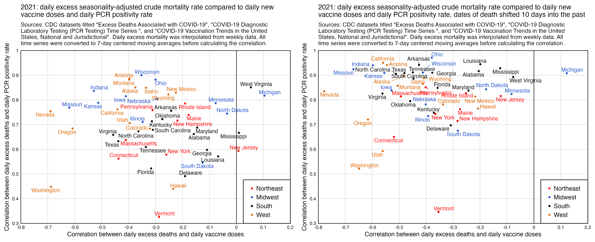
library(ggplot2)
download.file("https://data.cdc.gov/api/views/rh2h-3yt2/rows.csv?accessType=DOWNLOAD","statesvax.csv")
download.file("https://data.cdc.gov/api/views/pwn4-m3yp/rows.csv?accessType=DOWNLOAD","statescases.csv")
download.file("https://healthdata.gov/api/views/j8mb-icvb/rows.csv","statespcr.csv")
vax=read.csv("statesvax.csv")|>subset(date_type=="Report")
vax[,1]=as.Date(vax[,1],"%m/%d/%Y")
vax=vax[,c("Date","Location","Administered_Daily")]
colnames(vax)=c("date","state","vax")
pcr=read.csv("statespcr.csv")
pos=pcr[pcr$overall_outcome=="Positive",c(6,1,7)]
neg=pcr[pcr$overall_outcome=="Negative",c(6,1,7)]
pcr=merge(pos,neg,by=c(1,2))
pcr=data.frame(as.Date(pcr[,1],"%Y/%m/%d"),pcr[,2],pcr=pcr[,3]/(pcr[,3]+pcr[,4])*100)
cov=read.csv("statescases.csv")|>subset(state%in%state.abb)
cov=data.frame(date=as.Date(cov$start_date,"%m/%d/%Y")-3,state=cov$state,dead=cov$new_deaths)|>subset(grepl(2021,date))
cov=do.call(rbind,lapply(split(cov,cov$state),\(x){x=rbind(x,data.frame(date=as.Date(setdiff(seq(min(x$date),max(x$date),1),x$date),"1970-1-1"),state=x$state[1],dead=NA));x=x[order(x$date),];x$dead=zoo::na.approx(x$dead,na.rm=F)/7;x}))
# cov[,1]=cov[,1]-10
me=merge(vax,pcr,by=1:2)|>merge(cov,by=1:2)
ma=\(x,b=1,f=b)rowMeans(embed(c(rep(NA,b),x,rep(NA,f)),f+b+1),na.rm=T)
xy=t(split(me,me$state)|>sapply(\(x)c(cor(ma(x$vax,3),ma(x$dead,3),use="complete.obs"),cor(ma(x$pcr,3),ma(x$dead,3),use="complete.obs"))))
xy=as.data.frame(xy)|>"colnames<-"(c("x","y"))
region=read.csv(header=F,text="Northeast,CT,MA,ME,NH,RI,VT,NJ,NY,PA
Midwest,IN,IL,MI,OH,WI,IA,KS,MN,MO,ND,NE,SD
South,DC,DE,FL,GA,MD,NC,SC,VA,WV,KY,MS,TN,AL,AR,LA,OK,TX
West,AZ,CO,MT,NM,NV,UT,WY,ID,AK,CA,HI,OR,WA")
xy$region=setNames(rep(region[,1],ncol(region)-1),unlist(region[,-1]))[rownames(xy)]
xy$region=factor(xy$region,region[,1])
color=c("red","#2050cc","black","#dd6600")
xstart=-.7;xend=.4;ystart=-0;yend=1
xtit=paste0("Correlation between daily COVID deaths and daily vaccine doses")
ytit=paste0("Correlation between daily COVID deaths and daily PCR positivity rate")
ggplot(xy,aes(x=x,y=y,color=region))+
geom_hline(yintercept=c(ystart,0,yend),linewidth=.3,lineend="square")+
geom_vline(xintercept=c(xstart,0,xend),linewidth=.3,lineend="square")+
geom_point(size=.6)+
ggrepel::geom_text_repel(label=state.name[match(rownames(xy),state.abb)],size=2.5,max.overlaps=Inf,segment.size=.2,min.segment.length=.2,box.padding=.07,show.legend=F)+
scale_x_continuous(limits=c(xstart,xend),breaks=seq(xstart,xend,xstep),labels=\(x)round(x,1))+
scale_y_continuous(limits=c(ystart,yend),breaks=seq(ystart,yend,ystep),labels=\(x)round(x,1))+
labs(x=xtit,y=ytit,title="2021: daily COVID deaths compared to daily new vaccine doses and daily PCR\npositivity rate",subtitle="Sources: CDC datasets titled \"Weekly United States COVID-19 Cases and Deaths by State\", \"COVID-19 Diagnostic Laboratory Testing (PCR Testing) Time Series
\", and \"COVID-19 Vaccination Trends in the United States, National and Jurisdictional\". Daily deaths were interpolated from weekly data. All time series were converted to 7-day centered moving averages before calculating the correlation."|>stringr::str_wrap(100))+
coord_cartesian(clip="off",expand=F)+
scale_fill_manual(values=color)+
scale_color_manual(values=color)+
theme(axis.text=element_text(size=6,color="black"),
axis.ticks=element_blank(),
axis.ticks.length=unit(.05,"lines"),
axis.title=element_text(size=8),
legend.background=element_blank(),
legend.box.just="center",
legend.box.margin=margin(0,.3,0,0,unit="lines"),
legend.box.background=element_rect(color="black"),
legend.direction="vertical",
legend.justification=c(0,0),
legend.key=element_rect(fill=alpha("white",0)),
legend.key.size=unit(.8,"lines"),
legend.position=c(0,0),
legend.spacing.x=unit(0,"pt"),
legend.spacing.y=unit(0,"pt"),
legend.text=element_text(size=8,vjust=.5),
legend.title=element_blank(),
panel.background=element_rect(fill="white"),
panel.grid.major=element_line(color="gray80",linewidth=.3),
plot.background=element_rect(fill="white"),
plot.margin=margin(.4,.65,.4,.4,"lines"),
plot.subtitle=element_text(size=7.5),
plot.title=element_text(size=9))
ggsave("1.png",width=5.4,height=4.4,dpi=450)
In December 2023 Steve Kirsch published a spreadsheet of data from the Maldives, which appears to include the dates of death for all or almost all of citizens of the Maldives who died in 2021-2022, even though it's missing some deaths in 2020 and 2023. [moar.html#Data_for_deaths_in_2020_2023_in_Maldives] The spreadsheet also includes the dates of vaccination of each person, and it includes a column for cause of death, including whether the death was attributed to COVID. During the peak in COVID deaths in May 2021, over half of all deaths are listed as COVID deaths, which are indicated by a pink background color:

The plot below shows that in May 2021 when there was the highest number of deaths, there were 122 deaths in unvaccinated people and 81 deaths in vaccinated people. And in May 2021 the percentage of unvaccinated people was 41.992% based on the average daily percentage of unvaccinated people at OWID, so based on the calculation (122/41.992)/(81/(100-41.992)), unvaccinated people had about 2.1 times higher mortality than vaccinated people in May 2021. However on months with a lower number of COVID deaths, the ratio between unvaccinated and vaccinated mortality was lower, which seems to indicate that the vaccines prevented COVID deaths (even though it could also be that healthy people were more likely to get vaccinated and healthy people were less likely to die of COVID):

Most deaths are of course in older people, and in most countries older people are more likely to be vaccinated than younger people. So if you took a weighted average of the percentage of vaccinated people in each age group where the weight was the number of people in the age group in Kirsch's spreadsheet, you'd probably get a much lower percentage of unvaccinated people than the percentage in the total population.
This plot also shows that the spike in deaths in May to June 2021 was much higher in unvaccinated people (even though it could partially be because people who had been vaccinated in March 2021 still had reduced mortality in May because of the temporal healthy vaccinee effect):
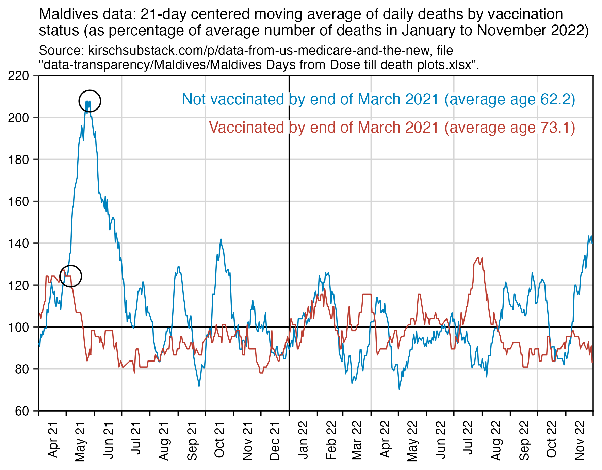
The heatmap below shows that in southern states in summer 2021, there was a particularly high percentage of COVID deaths in ages 0-54 out of all COVID deaths. It could be because young people were less likely to be vaccinated than old people, but maybe by 2022 young people had natural immunity so the vaccine offered less competitive advantage to older people, or maybe by 2022 more young people had gotten vaccinated (R code:
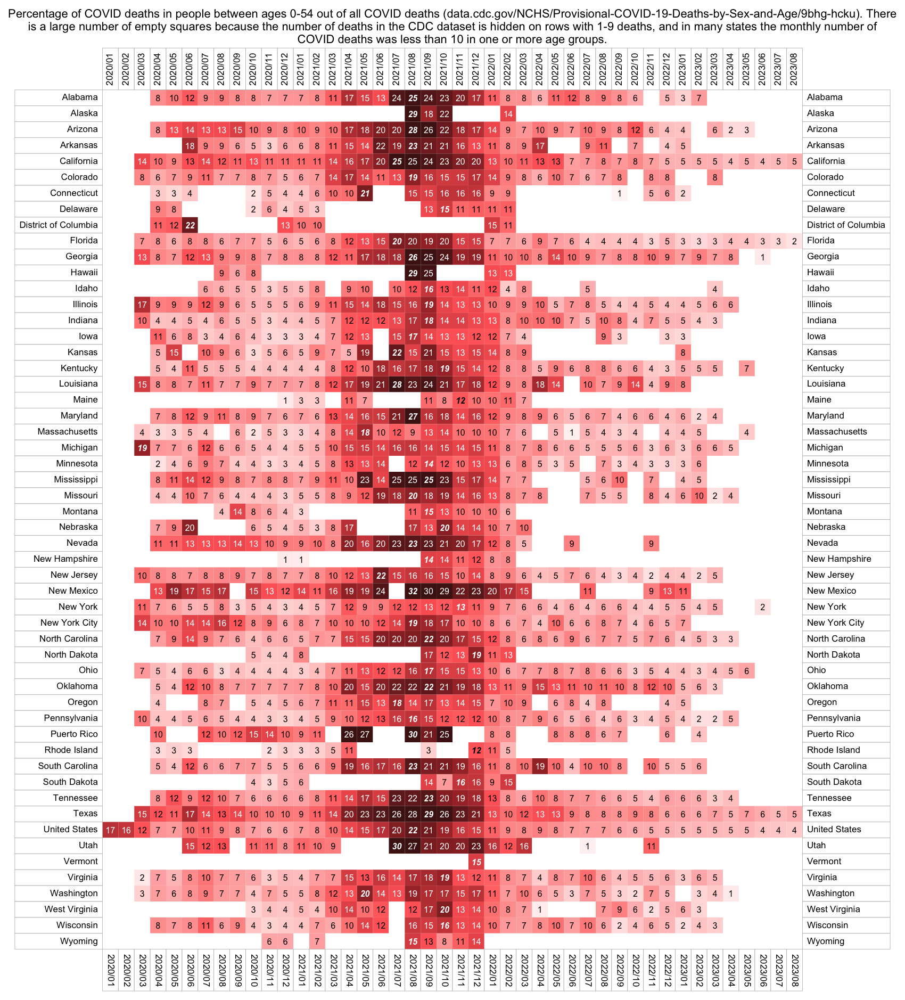
I also tried calculating the percentage of vaccinated people in ages 25-49 as a percentage of the percentage of vaccinated people in ages 65 and above. It was only about 55% in Alabama in August 2021 but it was 90% in Massachusetts, which might explain why Alabama had a higher percentage of COVID deaths in younger age groups than Massachusetts (and in fact in my previous heatmap Massachusetts had the lowest percentage of COVID deaths in ages 0-54):
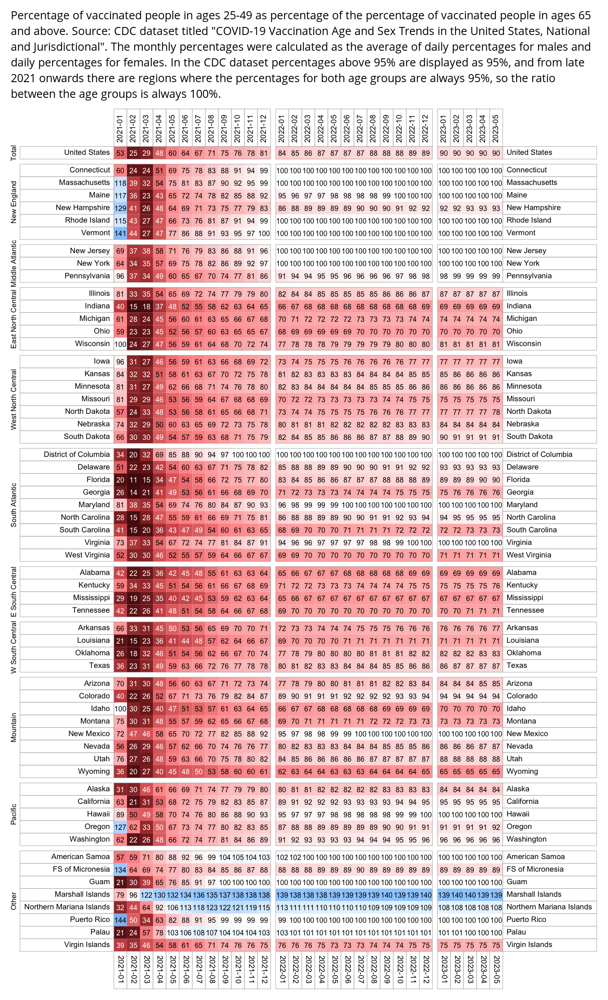
# install.packages("BiocManager")
# BiocManager::install("ComplexHeatmap")
# install.packages("circlize")
library(data.table);library(ComplexHeatmap)
vax=fread("d/cd/COVID-19_Vaccination_Age_and_Sex_Trends_in_the_United_States__National_and_Jurisdictional_20240131.csv")[grepl("^Age",Demographic_Category)]
abb=setNames(c(state.name,"United States","District of Columbia","American Samoa","Guam","Northern Mariana Islands","Puerto Rico","United States Minor Outlying Islands","Virgin Islands"),c(state.abb,"US","DC","AS","GU","MP","PR","UM","VI"))
vax=vax[,.(pct=mean(Administered_Dose1_pct_agegroup,na.rm=T)),by=.(date=substring(as.Date(vax$Date,"%m/%d/%Y"),1,7),state=Location,age=sub("Ages?_(.*?)_?yrs","\\1",Demographic_Category))]
vax=vax[age=="65+"]|>merge(vax[age=="25-49"],by=c("date","state"))|>transform(pct=pct.y/pct.x*100)
m=xtabs(pct~state+date,vax)
states=read.csv("https://github.com/cphalpert/census-regions/raw/master/us%20census%20bureau%20regions%20and%20divisions.csv")
states=rbind(states,data.frame(State=c("United States","District of Columbia","American Samoa","Guam","Northern Mariana Islands","Puerto Rico","Virgin Islands","FS of Micronesia","Marshall Islands","Palau"),State.Code=c("US","DC","AS","GU","MP","PR","VI","FM","MH","PW"),Region=NA,Division=c("Total",rep("Other",9))))
states$order=match(states$Division,strsplit("Total,New England,Middle Atlantic,East North Central,West North Central,South Atlantic,East South Central,West South Central,Mountain,Pacific,Other",",")[[1]])
states$Division=sub("([WE]).* (South Central)","\\1 \\2",states$Division)
m=m[order(states$ord[match(rownames(m),states$State.Code)]),]
m=m[,-1]
rownames(m)=states$State[match(rownames(m),states$State.Code)]
png("0.png",w=ncol(m)*30+1000,h=nrow(m)*30+1000,res=72)
ht_opt$COLUMN_ANNO_PADDING=unit(0,"mm")
ht_opt$ROW_ANNO_PADDING=unit(0,"mm")
split=states$Division[match(rownames(m),states$State)]
Heatmap(m,
column_split=substring(colnames(m),1,4),
row_split=factor(split,unique(split)),
column_title=NULL,
row_title_gp=gpar(fontsize=16),
column_gap=unit(4,"mm"),
row_gap=unit(4,"mm"),
border="gray60",
width=unit(ncol(m)*30,"pt"),
height=unit(nrow(m)*30,"pt"),
show_column_names=F,
show_row_names=F,
cluster_columns=F,
cluster_rows=F,
show_heatmap_legend=F,
rect_gp=gpar(col="gray80",lwd=0),
top_annotation=columnAnnotation(text=anno_text(gt_render(colnames(m),padding=unit(c(3,3,3,3),"mm")),just="left",rot=90,location=unit(0,"npc"),gp=gpar(fontsize=17,border="gray60",lwd=1))),
bottom_annotation=columnAnnotation(text=anno_text(gt_render(colnames(m),padding=unit(c(3,3,3,3),"mm")),just="left",rot=270,gp=gpar(fontsize=17,border="gray60",lwd=1))),
left_annotation=rowAnnotation(text=anno_text(gt_render(rownames(m),padding=unit(c(3,3,3,3),"mm")),just="right",location=unit(1,"npc"),gp=gpar(fontsize=17,border="gray60",lwd=1))),
right_annotation=rowAnnotation(text=anno_text(gt_render(rownames(m),padding=unit(c(3,3,3,3),"mm")),just="left",location=unit(0,"npc"),gp=gpar(fontsize=17,border="gray60",lwd=1))),
col=colorRamp2(seq(200,0,,11),hex(HSV(c(210,210,210,210,210,0,0,0,0,0,0),c(.9,.8,.6,.4,.2,0,.2,.4,.6,.8,.9),c(.2,.4,.8,1,1,1,1,1,.8,.4,.2)))),
cell_fun=\(j,i,x,y,w,h,fill)grid.text(round(m[i,j]),x,y,gp=gpar(fontsize=16,col=ifelse(abs(m[i,j]-100)>=50,"white","black"))))
dev.off()
system("mogrify -trim 0.png;convert 0.png -gravity northwest -splice x10 -size `identify -format %w 0.png`x -pointsize 25 caption:'Percentage of vaccinated people in ages 25-49 as percentage of the percentage of vaccinated people in ages 65 and above. Source: CDC dataset titled \"COVID-19 Vaccination Age and Sex Trends in the United States, National and Jurisdictional\". The monthly percentages were calculated as the average of daily percentages for males and daily percentages for females. In the CDC dataset percentages above 95% are displayed as 95%, and from late 2021 onwards there are regions where the percentages for both age groups are always 95%, so the ratio between the age groups is always 100%.' +swap -append -trim -bordercolor white -border 24 +repage 1.png")
In the southern states which had a low percentage of vaccinated people in young age groups relative to old age groups, the excess all-cause mortality during the Delta wave was also higher in young age groups:
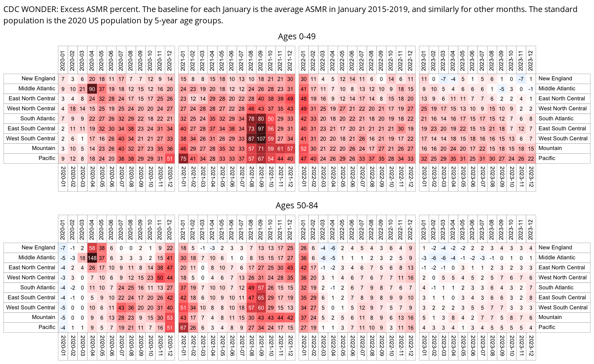
I got monthly COVID deaths by 5-year age groups from CDC WONDER: https://wonder.cdc.gov/mcd-icd10-provisional.html. In section 1 I set "Group Results By" to Month" and "Five-Year Age Groups", in section 6 I selected *U07.1 as the underlying cause of death, and in section 8 I checked "Export Results" and "Show Zero Values".
My heatmap below shows that compared to the winter 2020-2021 wave, the Omicron wave also seems to have killed a disproportionate number of young people, which might be because young people were less likely to be vaccinated than old people.
Each row has its own color scheme where the maximum value is black and zero is white. If you look at the colors of the squares during the summer 2020 wave, ages 60-69 have a higher color than older age groups, even though people were not yet vaccinated in summer 2020. However it could be because seasonal variation in mortality is greater in older age groups, so maybe older age groups also have more COVID deaths in winter relative to summer. But what complicates things further is that during the summer 2022 wave, older age groups again have a higher color than younger age groups.
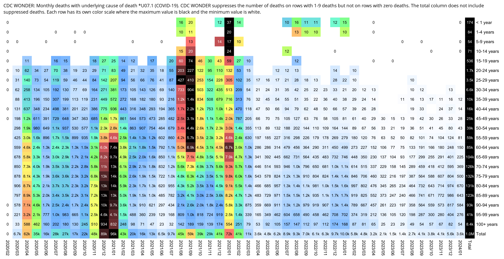
t=readLines("Provisional Mortality Statistics, 2018 through Last Week.txt")
t=paste(t[1:(which(t=="\"---\"")[1]-1)],collapse="\n")
t=read.table(sep="\t",text=t,header=T)
t=t[t$Month.Code>="2020/02",]
t=t[t$Five.Year.Age.Groups!="Not Stated",]
m=tapply(t$Deaths,t[,c("Five.Year.Age.Groups","Month.Code")],c)
m=m[order(as.numeric(sub("\\W.*","",sub("< 1 year",0,rownames(m))))),]
m=cbind(m,Total=rowSums(m,na.rm=T))
m=rbind(m,Total=colSums(m,na.rm=T))
kimi=\(x){e=floor(log10(ifelse(x==0,1,abs(x))));e2=pmax(e,0)%/%3+1;p=!is.na(x)&x!=0;x[p]=paste0(sprintf(paste0("%.",ifelse(e[p]%%3==0,1,0),"f"),x[p]/1e3^(e2[p]-1)),c("","k","M","B","T")[e2[p]]);x}
disp=kimi(m)
m=m/apply(m[,1:(ncol(m)-1)],1,max,na.rm=T)
pheatmap::pheatmap(m,filename="0.png",display_numbers=disp,
cluster_rows=F,cluster_cols=F,legend=F,border_color=NA,
cellwidth=20,cellheight=20,fontsize=9,fontsize_number=8,na_col="white",
number_color=ifelse(m>.8,"white","black"),
breaks=seq(0,1,,256),
colorRampPalette(colorspace::hex(colorspace::HSV(c(210,210,210,160,110,60,30,0,0,0),c(0,.25,rep(.5,8)),c(rep(1,8),.5,0))))(256))
system("w=`identify -format %w 0.png`;convert 0.png -gravity northwest \\( -splice x20 -size $[$w-60]x -pointsize 40 caption:'CDC WONDER: Monthly deaths with underlying cause of death *U07.1 (COVID-19). CDC WONDER suppresses the number of deaths on rows with 1-9 deaths but not on rows with zero deaths. The total column does not include suppressed deaths. Each row has its own color scale where the maximum value is black and the minimum value is white.' -extent $[w-60]x -gravity center \\) +swap -append +repage 1.png")
Kirsch posted this tweet which showed that 4 out of the 5 biggest counties in Georgia had higher excess mortality in 2021 than 2020: [https://twitter.com/stkirsch/status/1751828835405082658]
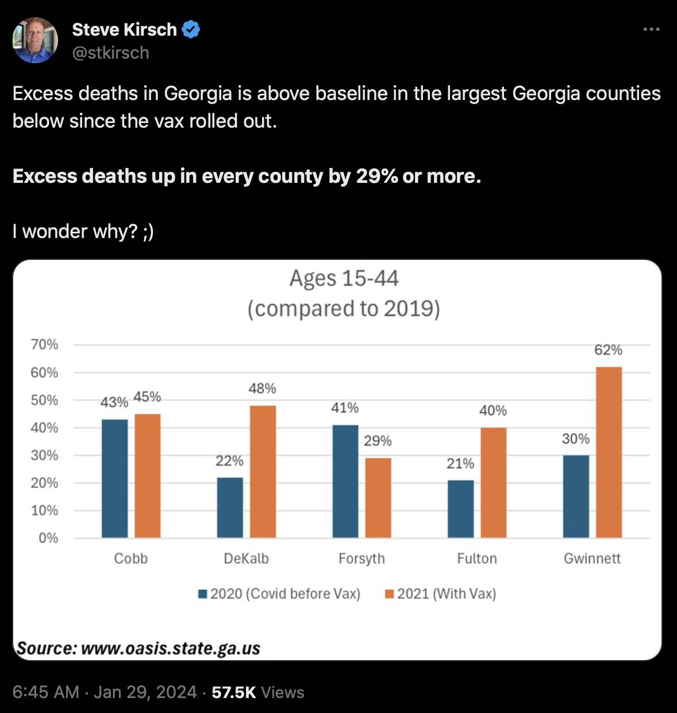
However the excess mortality for 2020 includes the period before COVID in January and February (even though Georgia was one of the southern states which already had fairly high excess mortality in March).
The spikes in excess deaths also coincided with spikes in PCR positivity rate, and there was low excess mortality around April 2021 when vaccine doses peaked:
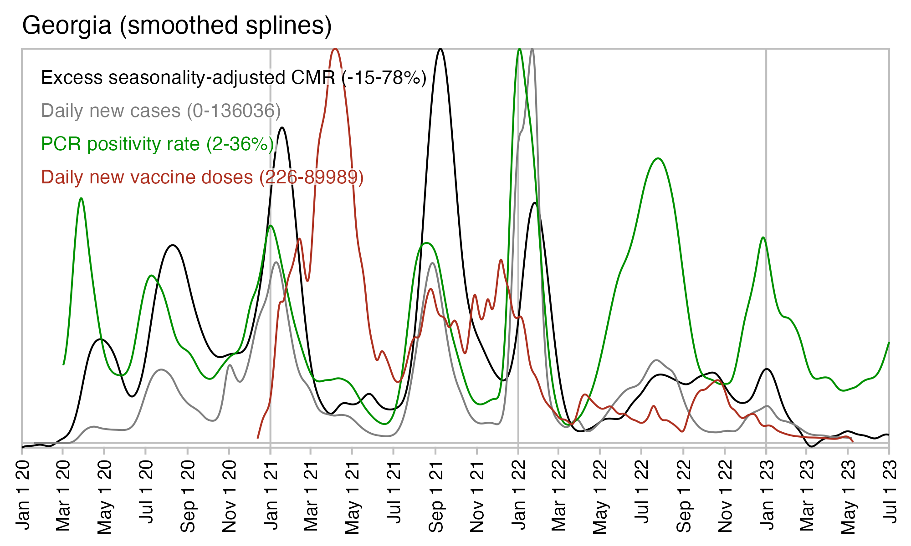
Ethical Skeptic posted this tweet where he commented on a plot by Truth In Numbers: [https://twitter.com/EthicalSkeptic/status/1757181136306848244/photo/1]
He used the wrong ICD-codes: used 'heart disease in older persons' (many of whom died in 2020/21 from Covid), not 'sudden cardiac death in younger persons' (see panel 1 chart done correctly).
Used an ICD R99/999 and Lag depleted 2023 data set (see data in panel 2). This is simply malicious.
Diluted the group with population growth (this cohort shrank actually, but he used total population - cheating, idiocy or both).
Did not use pull forward effect, as a professional does.
Quashed the chart into a full range y-axis magnitude to make it appear flat.
Put in a fictitious regression line, when the weekly line shows clearly an increase (save for his corrupted 2023 numbers)

He didn't specify how he calculated the baseline for excess deaths. But if he only fitted the baseline based on data from 2018 and 2019, then it might explain why the line for excess deaths appears to be so flat in 2018 and 2019, and the line would've probably looked less flat if he used a longer prediction interval so it wouldn't have fitted as closely to the data in 2018-2019. His plot is also missing data before 2018 so it's not clear what the trend was before COVID.
I did a query at CDC WONDER where I used the same ICD codes as Ethical Skeptic but I did one query where multiple causes of death included one of the cardiac-related ICD codes he used in his plot, and I did another query for the two unknown causes of death he included in his plot (R96 and R99): https://wonder.cdc.gov/mcd.html. I excluded COVID deaths by doing a query where the multiple causes of death included both one of the cardiac ICD codes and a code for COVID, and then I subtracted the weekly COVID deaths from the cardiac total (but I didn't bother subtracting COVID deaths from the unknown causes of death).
I noticed that there was a spike in cardiac deaths in early 2018, but for some reason Ethical Skeptic omitted approximately the first two months of 2018 from his plot. The peak in deaths had a similar height as the peaks in the winters after COVID, so at first I thought he may have omited in early 2018 from his plot which made the spikes after COVID seem higher in comparison. But then I noticed that he also omitted approximately the first two months of 2018 from his other plots, so it might have something to do with his "lag adjustment" method.
Ethical Skeptic omitted the last 26 weeks of 2023 from his plot because there was a big increase in deaths where the cause had not yet been specified. But his plot had an increase in deaths in the first half of 2023, but it seems to be due to deaths where the cause has not yet been specified and not due to cardiac deaths:

However I guess I'm not a professional because I didn't use the pull forward effect:
library(tempdisagg);library(ggplot2);library(stringr)
wonder=\(x){t=readLines(x);t=paste(t[1:(grep("^\"(---|Total)",t)[1]-1)],collapse="\n");read.table(sep="\t",text=t,header=T,na.strings="Not Applicable")[-1]}
old=wonder("Multiple Cause of Death, 1999-2020.txt")
old=td(data.frame(as.Date(paste(old$Month.Code,1),"%Y/%m %d"),old$Deaths)~1,,"daily","fast")$values
new=wonder("Provisional Mortality Statistics, 2018 through Last Week.txt")
covid=wonder("wondercovid.txt")
mt=match(covid$MMWR.Week.Code,new$MMWR.Week.Code)
new$Deaths[mt]=new$Deaths[mt]-covid$Deaths
new=td(data.frame(as.Date(sub(".*ending ","",new$MMWR.Week),"%B %d, %Y")+3,new$Deaths)~1,,"daily","fast")$values
ill=wonder("ill.txt")
ill=td(data.frame(as.Date(sub(".*ending ","",ill$MMWR.Week),"%B %d, %Y")+3,ill$Deaths)~1,,"daily","fast")$values
illold=wonder("illold.txt")
illold=td(data.frame(as.Date(paste(illold$Month.Code,1),"%Y/%m %d"),illold$Deaths)~1,,"daily","fast")$values
xy=rbind(old[!old$time%in%new$time,],new)
xy$z="MCD potentially involving sudden cardiac death, COVID excluded"
xy=rbind(xy,cbind(rbind(ill,illold[!illold$time%in%ill$time,]),z="Other sudden death with unknown cause, other ill-defined and unspecified causes of mortality"))
colnames(xy)=c("x","y","z")
xy$z=factor(xy$z,unique(xy$z))
xstart=as.Date("2011-1-1")
xend=as.Date("2024-1-1")
xbreak=seq(xstart,xend,"6 month")
xlab=c(rbind("",2011:2023),"")
cand=c(sapply(c(1,2,5),\(x)x*10^c(-10:10)))
ymax=max(xy$y,na.rm=T)
ystart=0
ystep=cand[which.min(abs(cand-ymax/5))]
yend=ystep*ceiling(ymax/ystep)
ybreak=seq(ystart,yend,ystep)
color=c("#aa0000","#888888")
sub="Data from wonder.cdc.gov/mcd.html. Weekly data from 2018-2023 and monthly data from 1999-2017 was interpolated to daily data. Multiple causes of death that potentially involve sudden cardiac death consist of I45 (Other conduction disorders), I46 (Cardiac arrest), I47 (Paroxysmal tachycardia), I48 (Atrial fibrillation and flutter), I49 (Other cardiac arrhythmias), I50 (Heart failure), I51 (Complications and ill-defined descriptions of heart disease), ROO (Abnormalities of heart beat), R01 (Cardiac murmurs and other cardiac sounds), R09.2 (Respiratory arrest), R09.8 (Other specified symptoms and signs involving the circulatory and respiratory systems). Ill-defined and unknown causes of death consist of multiple causes of death R96 (Other sudden death, cause unknown) and R99 (Other ill-defined and unspecified causes of mortality)."
labels=data.frame(x=xstart+.02*(xend-xstart),y=seq(yend*.93,,-yend/13,nlevels(xy$z)),label=levels(xy$z))
ggplot(xy,aes(x=x,y=y,color=z))+
geom_hline(yintercept=c(ystart,0,yend),color="gray65",linewidth=.25)+
geom_vline(xintercept=c(xstart,xend),color="gray65",linewidth=.25)+
geom_line(aes(color=z),linewidth=.3)+
geom_label(data=labels,aes(x=x,y=y,label=label),fill=alpha("white",.8),label.r=unit(0,"lines"),label.padding=unit(.04,"lines"),label.size=0,color=color[1:nrow(labels)],size=2.4,hjust=0)+
labs(title=str_wrap("CDC Wonder, ages 0-54: daily number of deaths with multiple cause of death potentially involving sudden cardiac death. MCD U07.1 (COVID) and U09.9 (long COVID) excluded.",88),caption=str_wrap(sub,95),x=NULL,y=NULL)+
coord_cartesian(clip="off",expand=F)+
scale_x_date(limits=c(xstart,xend),breaks=xbreak,labels=xlab)+
scale_y_continuous(limits=c(ystart,yend),breaks=ybreak)+
scale_color_manual(values=color)+
theme(axis.text=element_text(size=6.5,color="black"),
axis.ticks=element_line(linewidth=.25,color="gray65"),
axis.ticks.x=element_line(color=alpha("gray65",c(1,0))),
axis.ticks.length=unit(.15,"lines"),
axis.title=element_text(size=8),
legend.position="none",
panel.background=element_rect(fill="white"),
panel.grid=element_blank(),
plot.background=element_rect(fill="white"),
plot.margin=margin(.4,.65,.4,.4,"lines"),
plot.caption=element_text(size=7,hjust=0,margin=margin(.6,0,0,0,"lines")),
plot.title=element_text(size=7.5))
ggsave("1.png",width=4.6,height=3.3,dpi=450)
In Ethical Skeptic's plot the excess deaths looked flat in 2018-2019, but I believe it's because he fitted the trend against data from 2018-2019, because if you fit a trend against only two years of data then it's easy to get the trend to match the data closely.
In the plot below where I fitted the trend against data from 2021-2022, I also got my excess deaths to look mostly flat in 2021-2022:

library(tempdisagg);library(ggplot2);library(stringr)
wonder=\(x){t=readLines(x);t=paste(t[1:(grep("^\"(---|Total)",t)[1]-1)],collapse="\n");read.table(sep="\t",text=t,header=T,na.strings="Not Applicable")[-1]}
old=wonder("Multiple Cause of Death, 1999-2020.txt")
old=td(data.frame(as.Date(paste(old$Month.Code,1),"%Y/%m %d"),old$Deaths)~1,,"daily","fast")$values
new=wonder("Provisional Mortality Statistics, 2018 through Last Week.txt")
covid=wonder("wondercovid.txt")
mt=match(covid$MMWR.Week.Code,new$MMWR.Week.Code)
new$Deaths[mt]=new$Deaths[mt]-covid$Deaths
new=td(data.frame(as.Date(sub(".*ending ","",new$MMWR.Week),"%B %d, %Y")+3,new$Deaths)~1,,"daily","fast")$values
ill=wonder("ill.txt")
ill=td(data.frame(as.Date(sub(".*ending ","",ill$MMWR.Week),"%B %d, %Y")+3,ill$Deaths)~1,,"daily","fast")$values
illold=wonder("illold.txt")
illold=td(data.frame(as.Date(paste(illold$Month.Code,1),"%Y/%m %d"),illold$Deaths)~1,,"daily","fast")$values
d=rbind(old[!old$time%in%new$time,],new)|>"colnames<-"(c("x","y"))
xy=cbind(d,z="Actual deaths")
ma=\(x,b=1,f=b)rowMeans(embed(c(rep(NA,b),x,rep(NA,f)),f+b+1),na.rm=T)
prediction=d$x>="2018-1-1"&d$x<="2019-12-31"
linear=predict(lm(y~x,d[prediction,]),d)
days=substr(d$x,6,10)
daily=tapply(d$y[prediction]-linear[prediction],days[prediction],mean)
daily=ma(rep(daily,3),10)[(length(daily)+1):(2*length(daily))]|>setNames(names(daily))
excess=d$y-(linear+daily[days])
xy=rbind(xy,data.frame(x=d$x,y=excess,z="Excess deaths using seasonality-adjusted linear trend fitted against data from 2018-2019"))
prediction=d$x>="2021-01-01"&d$x<="2022-12-31"
linear=predict(lm(y~x,d[prediction,]),d)
days=substr(d$x,6,10)
daily=tapply(d$y[prediction]-linear[prediction],days[prediction],mean)
daily=ma(rep(daily,3),10)[(length(daily)+1):(2*length(daily))]|>setNames(names(daily))
excess=d$y-(linear+daily[days])
xy=rbind(xy,data.frame(x=d$x,y=excess,z="Excess deaths using seasonality-adjusted linear trend fitted against data from 2021-2022"))
xy$z=factor(xy$z,unique(xy$z))
xstart=as.Date("2011-1-1");xend=as.Date("2024-1-1")
xy=xy[xy$x>=xstart&xy$x<=xend,]
xbreak=seq(xstart,xend,"6 month")
xlab=c(rbind("",2011:2023),"")
cand=c(sapply(c(1,2,5),\(x)x*10^c(-10:10)))
ymax=max(xy$y,na.rm=T);ymin=min(xy$y,na.rm=T)
ystep=cand[which.min(abs(cand-(ymax-ymin)/5))]
ystart=ystep*floor(ymin/ystep)
yend=ystep*ceiling(ymax/ystep)
ystart=-120;yend=220
ybreak=seq(-100,yend,ystep)
color=c("#aa0000","#889944","#44aa44")
labels=data.frame(x=xstart+.02*(xend-xstart),y=seq(ystart+(yend-ystart)*.72,,-(yend-ystart)/15,nlevels(xy$z)),label=levels(xy$z))
sub=str_wrap("Data from wonder.cdc.gov/mcd.html. Weekly data from 2018-2023 and monthly data from 1999-2017 was interpolated to daily data. Multiple causes of death that potentially involve sudden cardiac death consist of I45 (Other conduction disorders), I46 (Cardiac arrest), I47 (Paroxysmal tachycardia), I48 (Atrial fibrillation and flutter), I49 (Other cardiac arrhythmias), I50 (Heart failure), I51 (Complications and ill-defined descriptions of heart disease), ROO (Abnormalities of heart beat), R01 (Cardiac murmurs and other cardiac sounds), R09.2 (Respiratory arrest), and R09.8 (Other specified symptoms and signs involving the circulatory and respiratory systems).",95)
sub=paste0(sub,"\n\n",str_wrap("The trend was calculated by first doing linear regression for daily data, then calculating the average difference to the trend for each 365 or 366 days of the year, then taking a 21-day centered moving average of the vector for daily differences, and then adding the difference to the trend on the corresponding day of each year.",95))
ggplot(xy,aes(x=x,y=y,color=z))+
geom_hline(yintercept=c(ystart,0,yend),color="gray65",linewidth=.25)+
geom_vline(xintercept=c(xstart,xend),color="gray65",linewidth=.25)+
geom_line(aes(color=z),linewidth=.3)+
geom_label(data=labels,aes(x=x,y=y,label=label),fill=alpha("white",.8),label.r=unit(0,"lines"),label.padding=unit(.04,"lines"),label.size=0,color=color[1:nrow(labels)],size=2.4,hjust=0)+
labs(title=str_wrap("CDC Wonder, ages 0-54: daily number of deaths with multiple cause of death potentially involving sudden cardiac death. MCD U07.1 (COVID) and U09.9 (long COVID) excluded.",88),x=NULL,y=NULL,caption=sub)+
coord_cartesian(clip="off",expand=F)+
scale_x_date(limits=c(xstart,xend),breaks=xbreak,labels=xlab)+
scale_y_continuous(limits=c(ystart,yend),breaks=ybreak)+
scale_color_manual(values=color)+
theme(axis.text=element_text(size=6.5,color="black"),
axis.ticks=element_line(linewidth=.25,color="gray65"),
axis.ticks.x=element_line(color=alpha("gray65",c(1,0))),
axis.ticks.length=unit(.15,"lines"),
axis.title=element_text(size=8),
legend.position="none",
panel.background=element_rect(fill="white"),
panel.grid=element_blank(),
plot.background=element_rect(fill="white"),
plot.margin=margin(.4,.65,.4,.4,"lines"),
plot.caption=element_text(size=6.7,hjust=0,margin=margin(.6,0,0,0,"lines")),
plot.title=element_text(size=7.5))
ggsave("1.png",width=4.6,height=4.5,dpi=450)
Beaudoin posted this tweet: [https://twitter.com/Coquin_de_Chien/status/1727583296668713020]
Here is 1 of 150 pages of graphs from The CDC Memorandum.
However his plots had a total of 16 deaths so maybe the increase in 2022 could've been due to chance. In the US as a whole in 2022, there's not that many excess deaths with an underlying cause of death C96.9 ("Malignant neoplasm of lymphoid, hematopoietic and related tissue, unspecified"). And actually if I would've used a polynomial baseline here, then the excess deaths would've been close to zero:
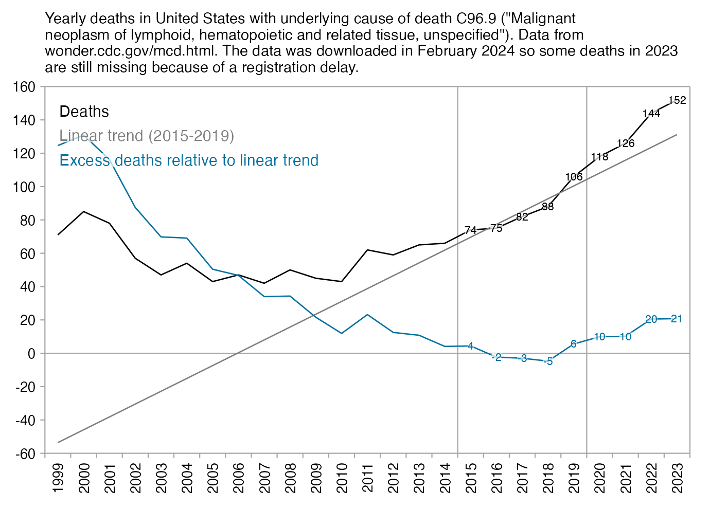
Beaudoin also posted this tweet:
Nothing to see here.
Move along.
Don't tell anyone.
Keep it quiet so we can sell more vx's.
However Beaudoin's plot only includes data back to 2015 so it's not that clear that there was an increasing trend in C41 deaths before COVID. When I looked at deaths in the US as a whole and I used a 2015-2019 linear baseline, I got negative excess mortality in 2021-2023 for the underlying cause of death C41 ("Malignant neoplasm of lymphoid, hematopoietic and related tissue, unspecified"):
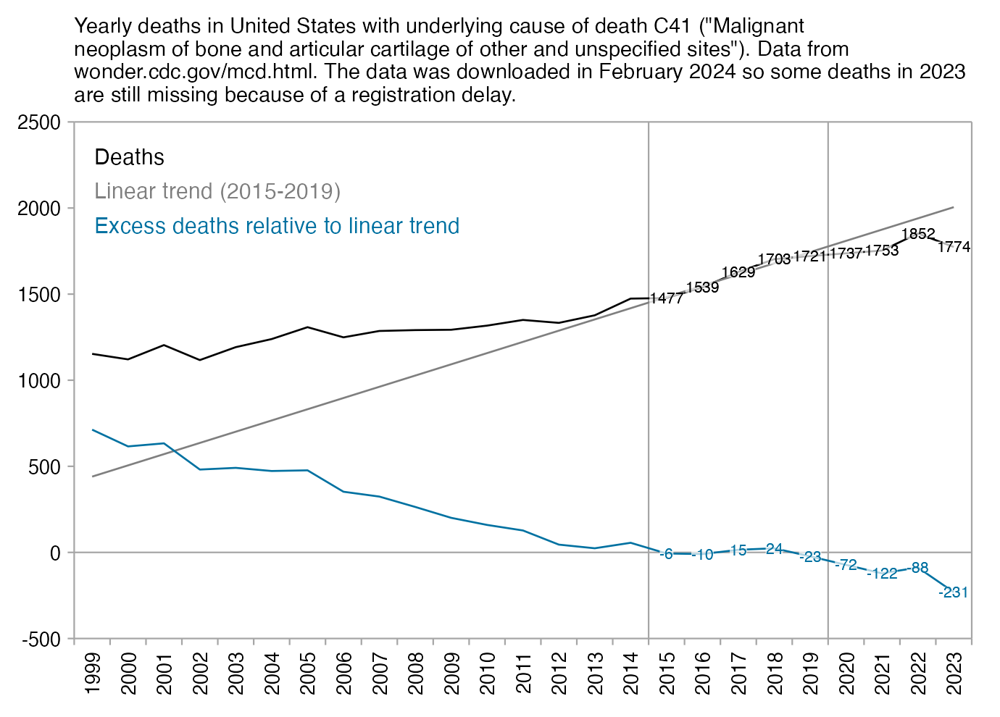
library(ggplot2)
t=data.frame(year=1999:2023)
t$dead=c(71,85,78,57,47,54,43,47,42,50,45,43,62,59,65,66,74,75,82,88,106,118,126,144,152)
trend=lm(dead~year,t|>subset(year>=2015&year<=2019))
t$trend=predict(trend,t)
t$poly=lm(dead~poly(year,2),t|>subset(year>=1999&year<=2019))|>predict(t)
t$excess=t$dead-t$trend
t$polyexcess=t$dead-t$poly
xy=data.frame(x=t$year,y=t$dead,z="Deaths")
xy=rbind(xy,data.frame(x=t$year,y=t$trend,z="Linear trend (2015-2019)"))
xy=rbind(xy,data.frame(x=t$year,y=t$excess,z="Excess deaths relative to linear trend"))
xy$z=factor(xy$z,unique(xy$z))
xstart=min(xy$x);xend=max(xy$x)
cand=c(sapply(c(1,2,5),\(x)x*10^c(-10:10)))
ystep=cand[which.min(abs(cand-(max(xy$y)-min(xy$y))/6))]
ystart=ystep*floor(min(xy$y,na.rm=T)/ystep)
yend=ystep*ceiling(max(xy$y,na.rm=T)/ystep)
xlab=c(rbind("",unique(xy$x)),"")
xbreak=seq(xstart-.5,xend+.5,.5)
color=c("black","gray50",hcl(225,80,40))
yheight=(yend-ystart)/15
labels=data.frame(x=xstart+.001*(xend-xstart),y=seq(yend-yheight,,-yheight,nlevels(xy$z)),label=levels(xy$z))
tit="Yearly deaths in United States with underlying cause of death C96.9 (\"Malignant neoplasm of lymphoid, hematopoietic and related tissue, unspecified\"). Data from wonder.cdc.gov/mcd.html. The data was downloaded in February 2024 so some deaths in 2023 are still missing because of a registration delay."|>stringr::str_wrap(90)
lab=na.omit(data.frame(xy,label=ifelse(!grepl("Linear",xy$z)&xy$x>=2015,round(xy$y),NA)))
ggplot(xy,aes(x,y,color=z))+
geom_hline(yintercept=c(ystart,0,yend),color="gray65",linewidth=.25)+
geom_vline(xintercept=c(xstart-.5,xend+.5,c(2019.5,2014.5)),color="gray65",linewidth=.25)+
geom_line(aes(color=z),linewidth=.3)+
geom_label(data=lab,aes(color=z,label=label),size=1.8,fill=alpha("white",.7),label.r=unit(0,"lines"),label.padding=unit(.0,"lines"),label.size=0)+
geom_text(data=lab,size=1.8,aes(color=z,label=label))+
geom_label(data=labels,aes(x=x,y=y,label=label),fill=alpha("white",.7),label.r=unit(0,"lines"),label.padding=unit(.04,"lines"),label.size=0,color=color[1:nrow(labels)],size=2.6,hjust=0)+
labs(title=tit,x=NULL,y=NULL)+
coord_cartesian(clip="off",expand=F)+
scale_x_continuous(limits=c(xstart-.5,xend+.5),breaks=xbreak,labels=xlab)+
scale_y_continuous(limits=c(ystart,yend),breaks=seq(ystart,yend,ystep))+
scale_color_manual(values=color)+
theme(axis.text=element_text(size=6.5,color="black"),
axis.text.x=element_text(angle=90,vjust=.5,hjust=1),
axis.ticks=element_line(linewidth=.25,color="gray65"),
axis.ticks.x=element_line(color=alpha("gray65",c(1,0))),
axis.ticks.length=unit(.15,"lines"),
axis.title=element_text(size=8),
legend.position="none",
panel.background=element_rect(fill="white"),
panel.grid=element_blank(),
plot.background=element_rect(fill="white"),
plot.margin=margin(.4,.65,.5,.4,"lines"),
plot.caption=element_text(size=6,hjust=0,margin=margin(.6,0,0,0,"lines")),
plot.title=element_text(size=7))
ggsave("1.png",width=4.6,height=3.3)
Ethical Skeptic posted these tweets: [https://twitter.com/EthicalSkeptic/status/1531517512906592256]
Covid Deaths per 100 K population trend down as the percentage of the population vaccinated rises.
Vaccines working right?
No, this is the function which existed prior to the vaccines being rolled out (22 Jan 2020 - 4 Apr 2021).
Watch for charlatans exploiting this effect.
In actuality, when we compare both periods before & after the launch of the vax (MMWR Wk 14 2021) - we observe that there exists no difference between pre & post vax death rates by US county. It is EXACTLY the same function pre & post vaccine.
Any benefit MUST show here.

However for some reason he extended his pre-vaccination period up to April 4th 2021, even though about 30% of the US population was already vaccinated at that point (and the majority of people were vaccinated in the elderly age groups which account for most COVID deaths):
$ curl https://data.cdc.gov/api/views/rh2h-3yt2/rows.csv>statesvax.csv $ csvtk filter2 -f '$Date=="04/03/2021"&&$date_type=="Report"&&$Location=="US"' statesvax.csv|csvtk cut -f Date,Location,Administered_Dose1_Pop_Pct Date,Location,Administered_Dose1_Pop_Pct 04/03/2021,US,31.4
He also didn't explain how he calculated the trend line, and it looks too low near the end of the x-axis, and for some reason he only drew the trend up to the point where the value of the x-axis was about 85%.
I tried plotting the percentage of vaccinated population on March 1st 2022 on the x-axis like Ethical Skeptic, but I compared COVID deaths in 2020 against COVID deaths in 2021-2022 so that I didn't include the first three months of 2021 as part of the pre-vaccination period. My trend was a lot steeper in 2021-2022 than 2020. And even in 2020 the overall trend looks more flat in my plot, because I drew the trend up to the end of the x-axis and I didn't smooth out the trend as heavily as Ethical Skeptic (or maybe his trend was just a polynomial curve or something). When I weighted the trend by population size, it got even flatter because larger counties have a higher percentage of vaccinated people than smaller counties, and in 2020 there were many large northeastern counties that had a high number of COVID deaths per capita:

library(data.table);library(ggplot2)
# download.file("https://github.com/nytimes/covid-19-data/raw/master/us-counties-2020.csv","us-counties-2020.csv")
# download.file("https://github.com/nytimes/covid-19-data/raw/master/us-counties-2022.csv","us-counties-2022.csv")
# download.file("https://www2.census.gov/programs-surveys/popest/datasets/2020-2022/counties/totals/co-est2022-alldata.csv","uscountypop.csv")
# download manually:
# https://data.cdc.gov/Vaccinations/COVID-19-Vaccinations-in-the-United-States-County/8xkx-amqh/about_data
t=fread("COVID-19_Vaccinations_in_the_United_States_County_20240227.csv")
t=t[Date=="03/01/2022",c("FIPS","Administered_Dose1_Recip")]
colnames(t)=c("fips","vax")
t$fips=as.integer(t$fips)
pop=fread("uscountypop.csv")[,.(fips=as.integer(sprintf("%d%03d",STATE,COUNTY)),pop=POPESTIMATE2022)]
nyt=fread("us-counties-2022.csv")[date=="2022-12-31",.(fips,deaths)]
nyt2=fread("us-counties-2020.csv")[date=="2020-12-31",.(fips,deaths)]
nyt=merge(nyt,nyt2,by="fips")[,.(fips,deaths=(deaths.x-deaths.y)/2)]|>na.omit()
states=read.csv("https://github.com/cphalpert/census-regions/raw/master/us%20census%20bureau%20regions%20and%20divisions.csv")[,c(2,3)]
fips=read.csv("https://gist.githubusercontent.com/dantonnoriega/bf1acd2290e15b91e6710b6fd3be0a53/raw/11d15233327c8080c9646c7e1f23052659db251d/us-state-ansi-fips.csv",strip.white=T)[,c(3,2)]
states=merge(states,fips,by=1)
states=setNames(states[,2],states[,3])
me=merge(merge(t,nyt),pop)[vax>0]|>na.omit()
xy=data.frame(x=pmin(100,me$vax/me$pop*100),y=pmin(500,me$deaths/me$pop*1e5),pop=me$pop)
xy$size=pmax(.3,log(me$pop,20)-2.8)
xy$region=factor(states[sub("...$","",me$fips)],c("Northeast","Midwest","South","West"))
xstart=10;xend=100;xstep=10;ystart=0;yend=500;ystep=100
xbreak=seq(xstart,xend,xstep)
ybreak=seq(ystart,yend,ystep)
smooth1=as.data.frame(predict(smooth.spline(xy$x,xy$y,spar=.85,w=xy$pop/max(xy$pop)),seq(0,100,.1)))
smooth2=as.data.frame(predict(smooth.spline(xy,spar=.85),seq(0,100,.1)))
leg1=data.frame(x=11.4,y=seq(yend*.94,,-yend/15,2),label=c("Smoothed spline (weighted by population size, spar=.85)","Smoothed spline (not weighted, spar=.85)"))
leg2=data.frame(x=xend-1.4,y=seq(yend*.94,,-yend/15,4),label=levels(xy$region))
pal1=c("#ee66aa","#993377")
pal2=c(hcl(225,100,50),hcl(55,50,50),"black",hcl(135,100,50))
ggplot(xy,aes(x,y))+
geom_label(data=leg1,aes(x=x,y=y,label=label),fill=alpha("white",.85),label.r=unit(0,"lines"),label.padding=unit(.04,"lines"),label.size=0,size=2.3,hjust=0,color=pal1)+
geom_label(data=leg2,aes(x=x,y=y,label=label),fill=alpha("white",.85),label.r=unit(0,"lines"),label.padding=unit(.04,"lines"),label.size=0,size=2.3,hjust=1,color=pal2)+
geom_vline(xintercept=c(xstart,xend),linewidth=.25,lineend="square")+
geom_hline(yintercept=c(ystart,yend),linewidth=.25,lineend="square")+
geom_point(aes(color=region),stroke=0,size=xy$size,alpha=.3)+
geom_line(data=smooth1,color=pal1[1],linewidth=.35)+
geom_line(data=smooth2,color=pal1[2],linewidth=.35)+
labs(x="Percentage of vaccinated population on March 1st 2022",y="COVID deaths per 100k person-years in 2020",title="US counties: COVID deaths vs percentage of vaccinated population on March 1st 2022",caption="Point size indicates population size. Y-axis values are truncated to 500. Population estimates are for mid-2022. Sources:
data.cdc.gov/Vaccinations/COVID-19-Vaccinations-in-the-United-States-County/8xkx-amqh/about_data,
www2.census.gov/programs-surveys/popest/datasets/2020-2022/counties/totals/co-est2022-alldata.csv,
github.com/nytimes/covid-19-data.")+
scale_x_continuous(limits=c(xstart,xend),breaks=xbreak)+
scale_y_continuous(limits=c(ystart,yend),breaks=ybreak)+
scale_color_manual(values=pal2)+
coord_cartesian(clip="off",expand=F)+
theme(axis.text=element_text(size=5.5,color="black"),
axis.ticks=element_line(linewidth=.25),
axis.ticks.length=unit(.15,"lines"),
axis.title=element_text(size=6.5),
legend.position="none",
panel.grid=element_blank(),
panel.background=element_rect(fill="white"),
plot.margin=margin(.4,.8,.4,.4,"lines"),
plot.caption=element_text(size=6.3,hjust=0),
plot.title=element_text(size=7.3))
ggsave("1.png",width=5.2,height=3.1,dpi=450)
Tore Aarhus Gulbrandsen posted these tweets: [https://twitter.com/saunasauen/status/1766339791753196004]
It appears that EuroMOMO is now part of the white-washing of excess mortality, perhaps unknowingly.
In mid 2022 the EuroMOMO graph for Finland showed repeatedly high values for the period 2021-06 to 2022-06, with only a few weeks below the zero-line.
Today's graph shows the period as rather normal, with many weeks below the zero-line in the same time frame.
"Oceania had always been at war with Eurasia."
However in a bulletin for week 21 of 2023, EUROMOMO announced that they started including data from spring 2023 onwards in their baseline calculation: [https://www.euromomo.eu/bulletins/2023-21]
After a long period with elevated overall European mortality through the COVID-19 pandemic, the European mortality (both totally for the entire population and in all age groups) is by spring 2023 within the expected level. Therefore, data from spring 2023 and onwards will be included in the estimations of the expected mortality. During the pandemic years, the usual patterns of mortality have been disrupted because of the unexpected and varying excess mortality experienced due to the COVID-19 pandemic. This means that the assumption that there is no elevated mortality in certain weeks in spring (week 16-25) and autumn (week 37-44) did not hold. Therefore, to avoid biasing the estimations of the expected mortality, data from the pandemic years (2020-2022) were excluded from the estimations of the expected mortality. Normally, the estimation of the expected mortality is based on data from a five-year period. However, when data from the three pandemic years are excluded from the estimations, the oldest data currently used is up to 8 years old. This means that until 2028, both data from the pre- and post-COVID-19 pandemic periods will be included in the estimations of the expected mortality.
David Bell posted this tweet: [https://twitter.com/bell00david/status/1767668902346002859]
Rapid rise in cancer & all-cause mortality in young US adults.
This would normally be considered a public health priority - looks multifactorial. An objective assessment from CDC would seem urgent, before we repeat a Covid-like response.
However the increase in 2021 doesn't seem that big if you compare it against the decrease in deaths during the 00s and 2010s:
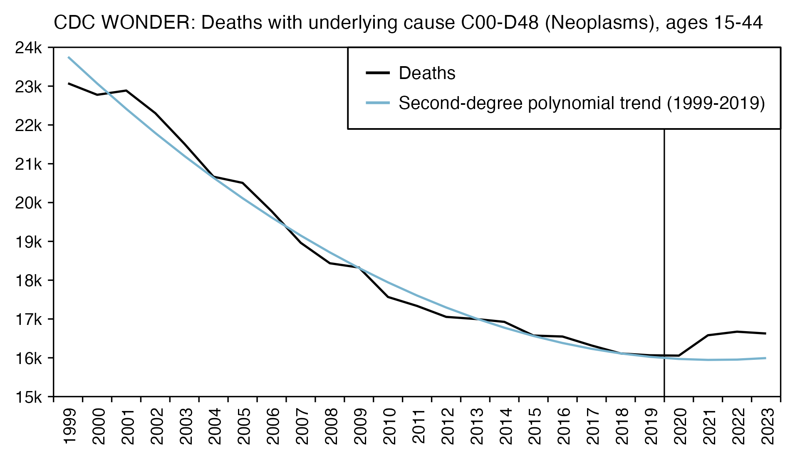
And the increase from 2020 to 2021 is even smaller if you look at CMR instead of the number of deaths, and it's even smaller if you look at ASMR instead of CMR:
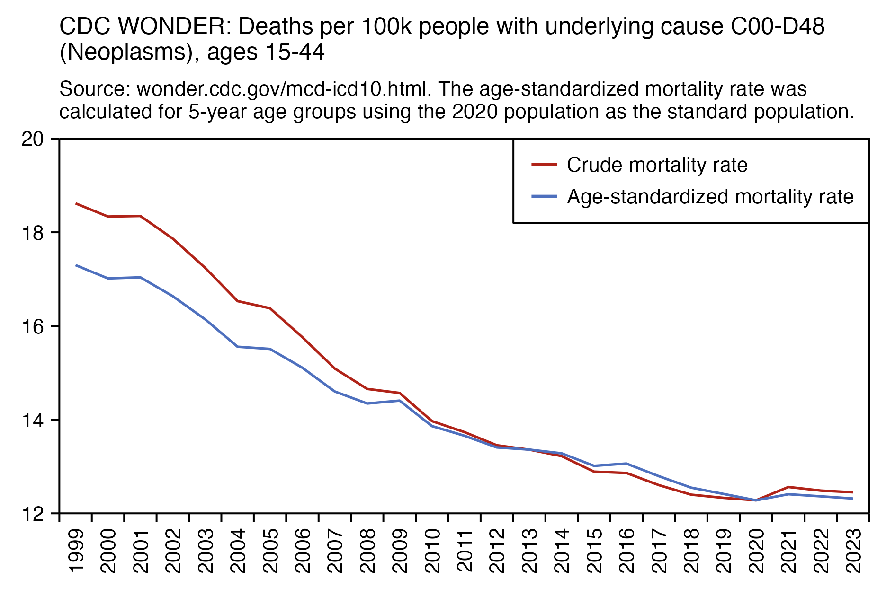
And also it could be that if COVID results in an increase in cancer, then people who started to develop cancer because of COVID in 2020 didn't necessarily die until 2021 or later.
library(ggplot2)
t=read.csv("https://pastebin.com/raw/NKYeAhD8")|>subset(year!=2024)
t=t[as.numeric(sub("[-+N].*","",t$age))%in%15:40,]
std=with(subset(t,year==2020),setNames(pop,age))
year=sort(unique(t$year))
xy=data.frame(x=year,cmr=tapply(t$dead,t$year,sum)/tapply(t$pop,t$year,sum)*1e5)
xy$asmr=tapply(std[t$age]/sum(std)*t$dead/t$pop,t$year,sum,na.rm=T)*1e5
xy$dead=tapply(t$dead,t$year,sum)
cand=c(sapply(c(1,2,5),\(x)x*10^c(-10:10)))
ymax=max(xy[,2:3]);ymin=min(xy[,2:3])
ystep=cand[which.min(abs(cand-(ymax-ymin)/8))]
ystart=ystep*floor(ymin/ystep)
yend=ystep*ceiling(ymax/ystep)
ybreak=seq(ystart,yend,ystep)
xstart=min(xy$x);xend=max(xy$x)
ystep2=cand[which.min(abs(cand-max(xy$dead)/8))]
ystart2=ystep2*floor(min(xy$dead)/ystep2)
yend2=ystep2*ceiling(max(xy$dead)/ystep2)
ybreak2=seq(ystart2,yend2,ystep2)
xy$cmr=(xy$cmr-ystart)/(yend-ystart)
xy$asmr=(xy$asmr-ystart)/(yend-ystart)
xy$dead=(xy$dead-ystart2)/(yend2-ystart2)
color1=c(hcl(225,100,40),"#cc0000")
color2="black"
leg1=data.frame(x=xstart+.025*(xend-xstart),y=seq(.93,0,,11)[1:2],label=c("Crude mortality rate per 100k","Age-standardized mortality rate per 100k"))
leg2=data.frame(x=xstart+.975*(xend-xstart),y=.93,label="Deaths")
kim=\(x)ifelse(x>=1e3,ifelse(x>=1e6,paste0(x/1e6,"M"),paste0(x/1e3,"k")),x)
ggplot(xy,aes(x,y))+
geom_hline(yintercept=c(0,1),color="black",linewidth=.3,lineend="square")+
geom_vline(xintercept=c(xstart,xend),color="black",linewidth=.3,lineend="square")+
geom_line(aes(y=cmr),color=color1[1],linewidth=.4)+
geom_line(aes(y=asmr),color=color1[2],linewidth=.4)+
geom_line(aes(y=dead),color=color2[1],linewidth=.4)+
geom_label(data=leg1,aes(x=x,y=y,label=label),fill=alpha("white",.85),label.r=unit(0,"lines"),label.padding=unit(.04,"lines"),label.size=0,color=color1,size=2.5,hjust=0)+
geom_label(data=leg2,aes(x=x,y=y,label=label),fill=alpha("white",.85),label.r=unit(0,"lines"),label.padding=unit(.04,"lines"),label.size=0,color=color2,size=2.5,hjust=1)+
labs(title="Deaths in ages 15-44 with underlying cause C00-D48 (Neoplasms)",subtitle=stringr::str_wrap("Source: wonder.cdc.gov/mcd-icd10.html. The age-standardized mortality rate was calculated for 5-year age groups using the 2020 population as the standard population.",86),x=NULL,y=NULL)+
coord_cartesian(clip="off",expand=F)+
scale_x_continuous(limits=c(xstart,xend),breaks=seq(xstart,xend))+
scale_y_continuous(limits=c(0,1),breaks=seq(0,1,,length(ybreak)),labels=ybreak,sec.axis=sec_axis(trans=~.+0,breaks=seq(0,1,,length(ybreak2)),labels=kim(ybreak2)))+
guides(colour=guide_legend(override.aes=list(linewidth=.5)))+
theme(axis.text=element_text(size=7,color="black"),
axis.text.x=element_text(angle=90,vjust=.5,hjust=1),
axis.ticks=element_line(linewidth=.3,color="black"),
axis.ticks.length=unit(.2,"lines"),
axis.title=element_text(size=8),
legend.position="none",
panel.background=element_rect(fill="white"),
plot.background=element_rect(fill="white"),
plot.margin=margin(.4,.6,.4,.5,"lines"),
plot.subtitle=element_text(size=7),
plot.title=element_text(size=8))
ggsave("1.png",width=4.2,height=2.8,dpi=450)
Clare Craig posted this plot which appears to show that in US counties which had a higher percentage of vaccinated people in 2022, the 2021 mortality rate minus 2020 mortality rate tended to be higher than in counties with a lower percentage of vaccinated people: [https://twitter.com/ClareCraigPath/status/1771230708511449587]
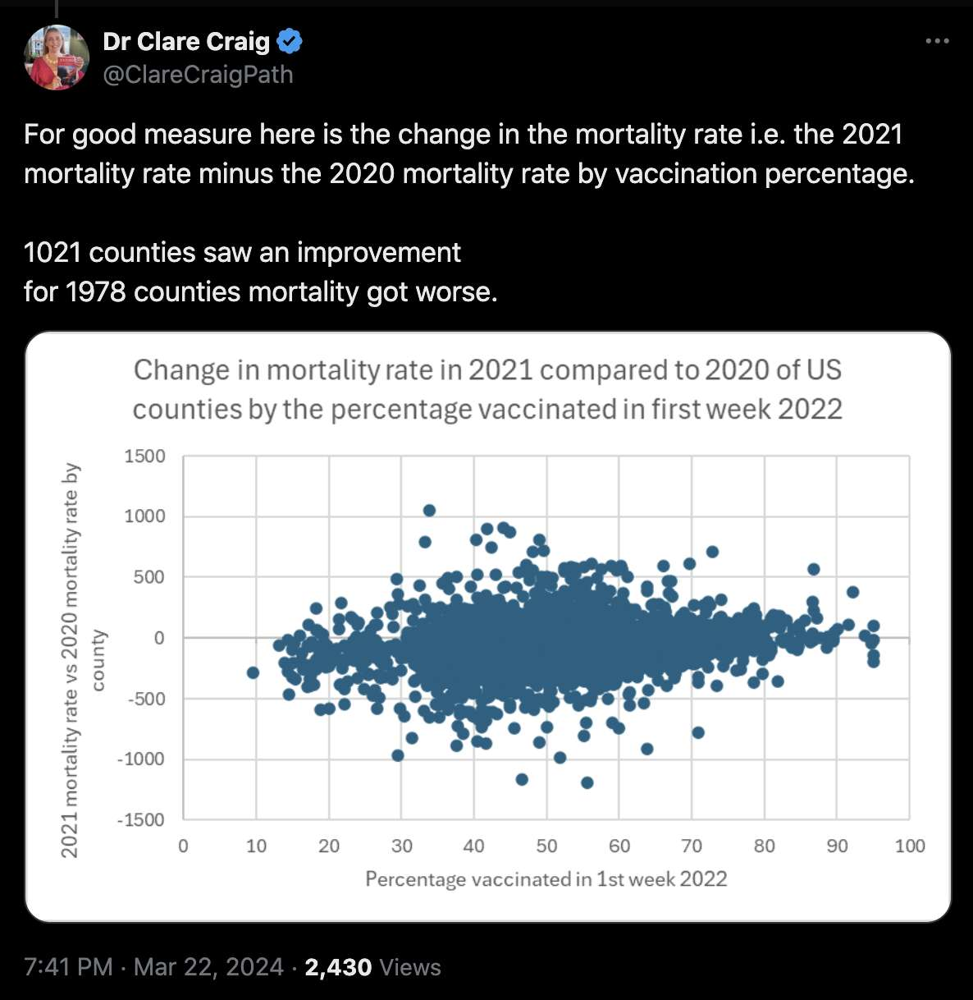
However actually her plot shows the mortality rate in 2020 minus the mortality rate in 2021. With 2021 minus 2020 I got the opposite trend:
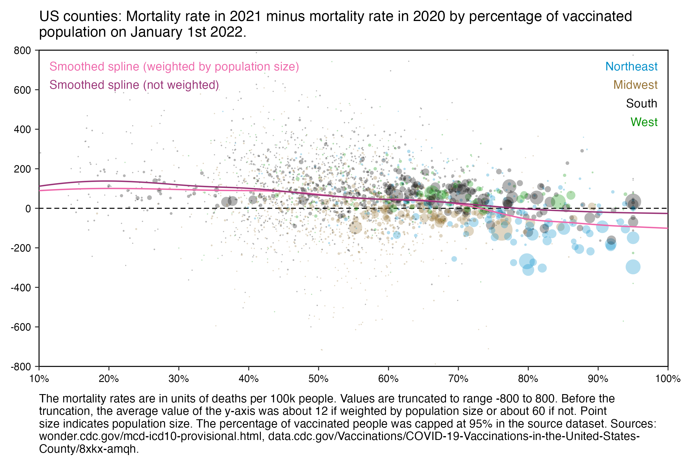
In Craig's plot the county which had about 9% vaccinated people was Long County, Georgia, which had a higher mortality rate in 2021 than 2020 on CDC Wonder, so it should've been above zero on the y-axis in her plot. This plot also shows that the county with about 9% vaccinated people had a higher mortality rate in 2021 than 2020: [https://twitter.com/ClareCraigPath/status/1771167720634978639]
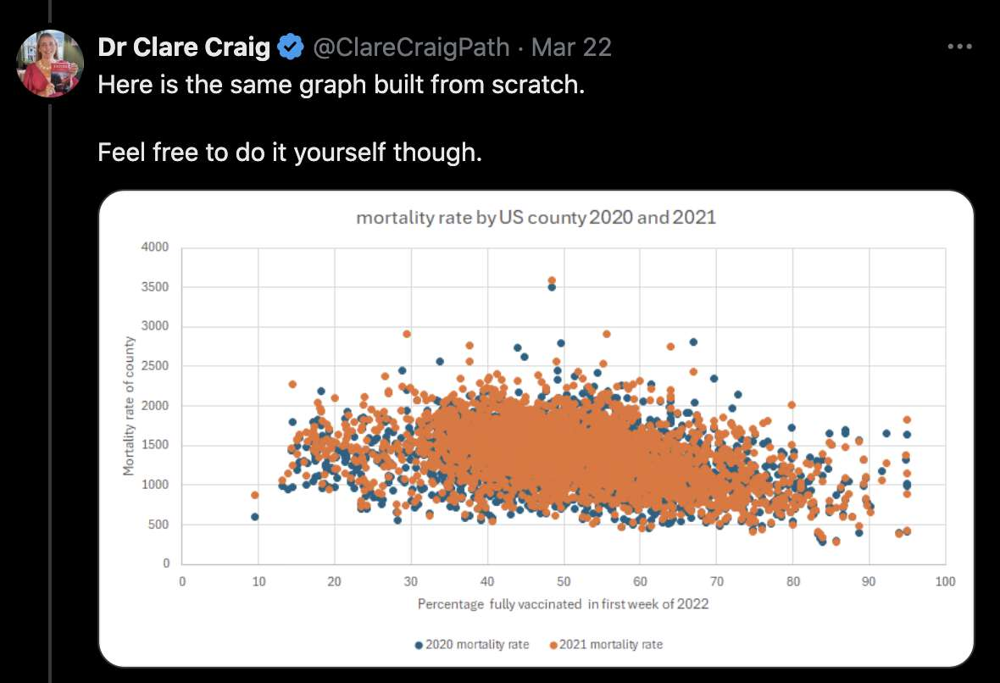
Craig also posted this tweet where she used the same CDC dataset for vaccinations by county, but she plotted the Completeness_pct column and not the Administered_Dose1_Pop_Pct column: [https://twitter.com/ClareCraigPath/status/1771154704992465029]
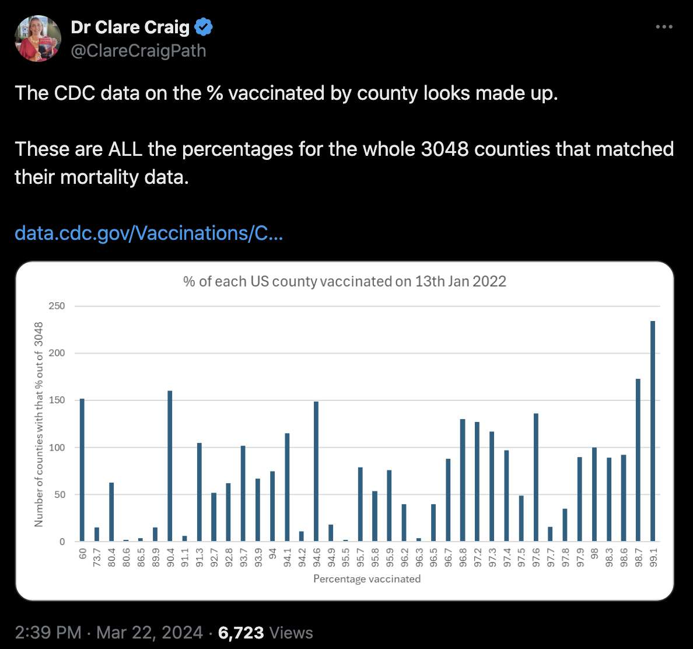
It's not clear why there's such a drastic difference between the two columns (or why the values of the Completeness_pct column seem to fall to a certain fixed set of values where other values in between are omitted):
> vax=fread("COVID-19_Vaccinations_in_the_United_States_County_20240227.csv")
> d=vax[Date=="01/01/2022",]
> table(round(d$Completeness_pct))
0 60 74 81 86 90 91 93 94 95 96 97 98 99
26 160 15 125 4 185 122 122 473 88 305 591 533 528
> table(round(d$Administered_Dose1_Pop_Pct))
0 10 14 15 16 17 18 19 20 21 22 23 24 25 26 27 28
152 1 2 3 6 11 8 5 6 6 9 11 9 9 9 15 6
29 30 31 32 33 34 35 36 37 38 39 40 41 42 43 44 45
7 8 7 10 9 12 22 32 26 44 50 59 65 76 56 90 67
46 47 48 49 50 51 52 53 54 55 56 57 58 59 60 61 62
106 75 101 68 108 84 103 83 120 93 93 70 89 75 97 70 68
63 64 65 66 67 68 69 70 71 72 73 74 75 76 77 78 79
56 70 52 52 39 48 32 42 37 36 17 30 25 23 27 28 18
80 81 82 83 84 85 86 87 88 89 90 91 92 93 94 95
21 18 22 20 9 18 17 10 12 10 10 2 12 5 7 38
The Completeness_pct column is described like this: "Represents the proportion of people with a completed primary series whose Federal Information Processing Standards (FIPS) code is reported and matches a valid county FIPS code in the jurisdiction." [https://data.cdc.gov/Vaccinations/COVID-19-Vaccinations-in-the-United-States-County/8xkx-amqh/about_data] And the Administered_Dose1_Pop_Pct column is described as the "Percent of Total Pop with at least one Dose by State of Residence".
In March 2024, Martin Neil, Norman Fenton, and Scott McLachlan published a preprint titled "The extent and impact of vaccine status miscategorisation on covid-19 vaccine efficacy studies": https://www.medrxiv.org/content/10.1101/2024.03.09.24304015v1.full.pdf.
The abstract said: "Systematic review identified thirty-nine studies that suffered from one particular and serious form of bias called miscategorisation bias, whereby study participants who have been vaccinated are categorised as unvaccinated up to and until some arbitrarily defined time after vaccination occurred. Simulation demonstrates that this miscategorisation bias artificially boosts vaccine efficacy and infection rates even when a vaccine has zero or negative efficacy. Furthermore, simulation demonstrates that repeated boosters, given every few months, are needed to maintain this misleading impression of efficacy. Given this, any claims of Covid-19 vaccine efficacy based on these studies are likely to be a statistical illusion."
Note how they relied on a simulation to demonstrate that the cheap trick would increase vaccine efficacy.
The methodology they used to do the simulations was poorly described, because for example they didn't mention that they only applied the cheap trick to the numerator but not the denominator, and they didn't explain which number of new vaccine doses they simulated on each day or week of the simulation. And they didn't even explain why unvaccinated people only had one line even though there should've been three different lines that would've corresponded to each vaccinated line. And at first I even thought that the weeks in their simulation were weeks since vaccination, but actually they were weeks of the simulation instead:
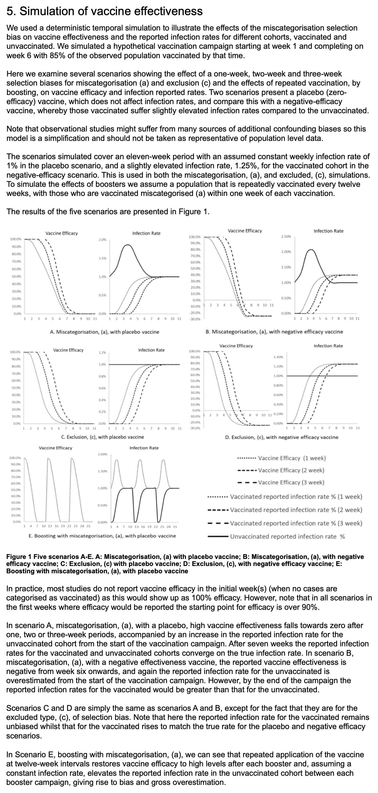
For example in scenario A, the vaccine was supposed to be a placebo which had no effect on the infection rate, and all people had a 1% constant infection rate regardless of whether they were vaccinated or not. So I thought that even if people would be classified as unvaccinated for the first 1 to 3 weeks after vaccination, both unvaccinated and vaccinated people should still have a constant infection rate. But I only understood how scenario A worked after Uncle John Returns posted this tweet: [https://x.com/UncleJo46902375/status/1770085722550133215]
I've simulated Fenton's simulation. I've only shown the 1 week unvaccinated line (to hit 1% in week 7). You can get almost any shape you like by adjusting the vaccinations per week. Curves smoothed by Excel.
I reproduced Uncle John's plot without smoothing, but I also added lines for unvaccinated people in the scenarios where people were considered as unvaccinated for 2 or 3 weeks after vaccination:
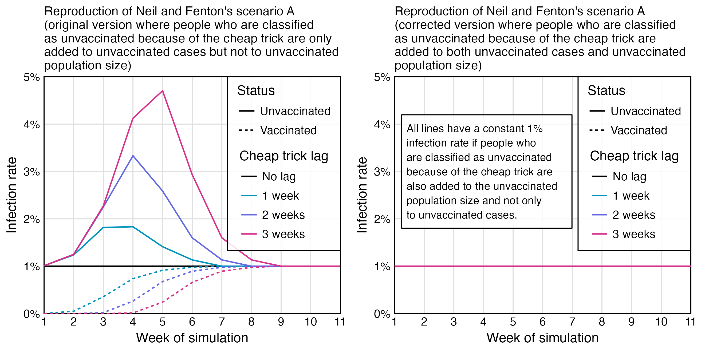
library(ggplot2)
weeks=11
vax=cumsum(c(10,190,360,200,70,20,rep(0,5)))
lv=c("No lag","1 week","2 weeks","3 weeks")
lag=factor(rep(lv,each=weeks),lv)
lagged=embed(c(rep(0,3),vax),4)
xy=data.frame(x=1:weeks,y=c(1000-lagged)/c(1000-vax),lag,status="Unvaccinated")
xy=rbind(xy,data.frame(x=1:weeks,y=c(lagged)/vax,lag,status="Vaccinated"))
# xy=data.frame(x=1:weeks,y=1,lag,status="Unvaccinated")
# xy=rbind(xy,data.frame(x=1:weeks,y=1,lag,status="Vaccinated"))
xstart=1;xend=weeks;ystart=0;yend=5
pal=c("black",hcl(c(200,250,330)+15,100,50))
ggplot(xy,aes(x,y))+
geom_hline(yintercept=c(ystart,yend),linewidth=.3,lineend="square")+
geom_vline(xintercept=c(xstart,xend),linewidth=.3,lineend="square")+
geom_line(aes(color=lag,linetype=status),linewidth=.4)+
# annotate(geom="label",fill=alpha("white",.8),x=1.24,y=3,hjust=0,vjust=.5,label=paste0("All lines have a constant 1% infection rate if people who are classified as unvaccinated because of the cheap trick are also added to the unvaccinated population size and not only to unvaccinated cases.")|fw(30),size=2.3,label.r=unit(0,"lines"),label.padding=unit(.4,"lines"),label.size=.3,lineheight=1.1)+
# labs(title="Reproduction of Neil and Fenton's scenario A (corrected version where people who are classified as unvaccinated because of the cheap trick are added to both unvaccinated cases and unvaccinated population size)"|>stringr::str_wrap(52),x="Week of simulation",y="Infection rate")+
labs(title="Reproduction of Neil and Fenton's scenario A (original version where people who are classified as unvaccinated because of the cheap trick are only added to unvaccinated cases but not to unvaccinated population size)"|>stringr::str_wrap(52),x="Week of simulation",y="Infection rate")+
scale_x_continuous(limits=c(xstart,xend),breaks=seq(xstart,xend))+
scale_y_continuous(limits=c(ystart,yend),breaks=seq(ystart,yend),labels=\(x)paste0(x,"%"))+
coord_cartesian(clip="off",expand=F)+
scale_color_manual(values=pal)+
guides(linetype=guide_legend(title="Status"),color=guide_legend(title="Cheap trick lag"))+
theme(axis.text=element_text(size=7,color="black"),
axis.ticks=element_blank(),
axis.ticks.length=unit(0,"lines"),
axis.title=element_text(size=8),
legend.background=element_blank(),
legend.box.background=element_rect(fill=alpha("white",.85),color="black",linewidth=.3),
legend.box.just="center",
legend.direction="vertical",
legend.justification=c(1,1),
legend.key=element_rect(fill=alpha("white",0)),
legend.key.size=unit(.8,"lines"),
legend.margin=margin(.3,.4,.3,.4,"lines"),
legend.position=c(1,1),
legend.spacing.x=unit(.15,"lines"),
legend.spacing.y=unit(-.2,"lines"),
legend.text=element_text(size=7,vjust=.5),
legend.title=element_text(size=8,margin=margin(0,0,.8,0,"lines")),
panel.background=element_rect(fill="white"),
panel.grid.major=element_line(linewidth=.3,color="gray88"),
plot.margin=margin(.5,.7,.3,.4,"lines"),
plot.title=element_text(size=7.5,margin=margin(.2,0,.4,0,"lines")))
ggsave("1.png",width=3,height=3,dpi=450)
Later I found out that in 2023 Neil and Fenton had published a Substack post where they described their method of simulation in more detail. And they even included a table similar to the table that Uncle John made, which made it clear that they only applied the cheap trick to the numerator but not to the denominator: [https://wherearethenumbers.substack.com/p/the-illusion-of-vaccine-efficacy]
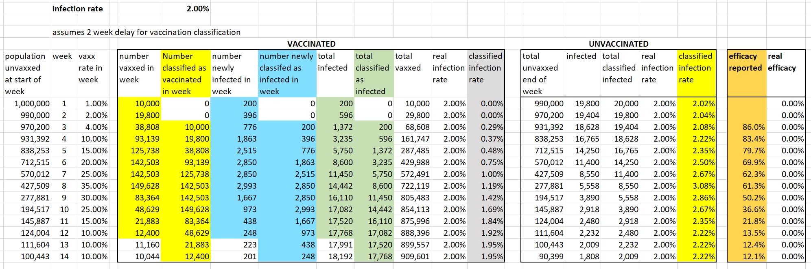
They could've also included a similar table in their new paper to make their methodology more clear.
People in Substack comments rarely address any specific details related to the topic of the post, and even if the author makes some obvious error, it's rare for people in the comments to mention it (or if they do then they just get banned like me). But this time several people in the comment section were wondering why the cheap trick was not also applied to the denominator in the models, and they were asking Neil and Fenton to cite any actual study which would've worked like their models so that the cheap trick was only applied to the numerator but not the denominator:
Neil and Fenton failed to cite any actual study which would've worked like their simulation, but they just added this comment to their post:
6 May 2023 Update: Quite a few people have asked why we are including those vaccinated within the last 21 days in the 'total vaccinated' denominator for the vaccinated infection rate if such people are classified as unvaccinated. The answer is that, while those infected within 21 days are classified as unvaccined in observational trials, those who are not infected are generally treated as vaccinated. In observational studies, which is what we are simulating here, there is no pre-defined vaccine and control group as there would be in a controlled trial. And, unlike a controlled trial, people are getting vaccinated at different times. Hence, everything is driven by looking at 'cases' i.e. those defined to have been infected in any given week; all those infected within 21 days of a vaccination are classified as unvaccinated. However, for the efficacy calculation at any time, for the 'denominators' they simply use the total number of people vaccinated so far (e.g. from NIMS) and for this, there is generally no '21 day delay'.
In the Substack post where Neil and Fenton described their simulation procedure in more detail, even people in their comment section were able to tell that it was BS, so I wonder if that's why they didn't include a proper description of their simulation procedure in their preprint.
In any case Neil and Fenton knew that their simulation method was controversial, so they could've mentioned in their preprint that there's an alternative way to perform the simulations where the cheap trick is also applied to the denominator and which produces completely different results, and that they were not sure which method was used in real vaccine efficacy studies.